<!DOCTYPE html>
<!-- saved from url=(0132)https://www.w3cplus.com/css/grid-layout-part-5.html?expire=1699848490&code=0i-_V80maLg&sign=bb8336ce2ffce6a5c7994526f8ccf5a7#paywall -->
<html lang="zh-hans" class="js"><head><meta http-equiv="Content-Type" content="text/html; charset=UTF-8">
  
<link rel="shortcut icon" href="https://www.w3cplus.com/sites/all/themes/w3cplusV2/favicon.ico" type="image/vnd.microsoft.icon">
<meta name="description" content="前面花了两个章节（Grid布局 [Part3](//www.w3cplus.com/css/grid-layout-part-3.html) 和 [Part4](//www.w3cplus.com/css/grid-layout-part-4.html)）介绍了在`grid-template-columns` 和 `grid-template-rows` 中使用固定长度值，动态值和一些关键词来设置网格轨道的大小。除了这些之外，还可以使用一些函数，比如`minmax(min, max)`、`repeat()` 等来设置网格轨道大小。在这一章节点，主要围绕着在 `grid-template-columns` 和 `grid-template-rows` 属性中如何使用函数（`minmax(min, max)` 和">
<meta name="keywords" content="前端,图解CSS, Grid, Layout, Web布局系列, 布局, 会员专栏,教程">
<meta name="generator" content="Drupal 7 (http://drupal.org)">
<link rel="canonical" href="https://www.w3cplus.com/css/grid-layout-part-5.html">
<link rel="shortlink" href="https://www.w3cplus.com/node/2715">
  <meta name="viewport" content="width=device-width,minimum-scale=1,maximum-scale=1">
  <meta http-equiv="X-UA-Compatible" content="IE=edge,chrome=1">
  <meta itemprop="name" content="W3cplus">
  <meta itemprop="image" content="//www.w3cplus.com/w3cplus-logo.jpg">
  <meta name="baidu-site-verification" content="ftyq813qEZgpw9nb">
  <meta name="applicable-device" content="pc,mobile">
  <title>图解CSS: Grid布局（Part5）_图解CSS, Grid, Layout, Web布局系列, 布局, 会员专栏 教程_W3cplus</title>
  <link type="text/css" rel="stylesheet" href="./Grid布局：5-网格中的可用函数_files/css_xE-rWrJf-fncB6ztZfd2huxqgxu4WO-qwma6Xer30m4.css" media="all">
<link type="text/css" rel="stylesheet" href="./Grid布局：5-网格中的可用函数_files/css_hYCLW089C9S9sP3ZYkuG6R-Q5ZHbEhblZBFjwZ_bE_I.css" media="all">
<link type="text/css" rel="stylesheet" href="./Grid布局：5-网格中的可用函数_files/css_W_jVXC7gZD8ENo3AHIwFL3Mih90k_Go_X3-i_hfyj2c.css" media="all">
<link type="text/css" rel="stylesheet" href="./Grid布局：5-网格中的可用函数_files/css_dc6MGCsMvp7moqrq-cRLC0GLEMrFF3Ego_HOWYVsZG4.css" media="all">
  <script src="./Grid布局：5-网格中的可用函数_files/hm.js.下载"></script><script type="text/javascript" src="./Grid布局：5-网格中的可用函数_files/jquery.min.js.下载"></script>

</head>
<body class="html not-front not-logged-in one-sidebar sidebar-second page-node page-node- page-node-2715 node-type-blog" style="">
  <div id="skip-link">
    <a href="https://www.w3cplus.com/css/grid-layout-part-5.html?expire=1699848490&amp;code=0i-_V80maLg&amp;sign=bb8336ce2ffce6a5c7994526f8ccf5a7#main-content" class="element-invisible element-focusable">跳转到主要内容</a>
  </div>
    <div id="header" role="header">
  <div class="container">
    <h1 id="logo">
      <a href="https://www.w3cplus.com/" title="记述前端那些事——引领Web前沿" id="site_name">w3cplus</a>
    </h1>
    <div class="toggle-topbar menu-icon" id="pull">
      <a href="https://www.w3cplus.com/css/grid-layout-part-5.html?expire=1699848490&amp;code=0i-_V80maLg&amp;sign=bb8336ce2ffce6a5c7994526f8ccf5a7#"><span>Menu</span></a>
    </div>
    <div class="toogle-topbar-content" id="pull-menu">
              <ul class="menu clearfix"><li class="keys_words leaf" style="display: none;"><a class="keys_words" href="https://www.tbshows.com/ffabdggshop/men/shtany-i-shorty/shorty/117176359-muzhskie-basketbolnye-shorty-adidas-cleveland-cavaliers-nba" title="Мужские баскетбольные шорты adidas cleveland cavaliers nba — цена 400 грн в каталоге Шорты ✓ Купить мужские вещи по доступной цене на Шафе , adidas adipure 11pro white black friday shoes 2019 , Украина #117176359
" style="display: none;">Мужские баскетбольные шорты adidas cleveland cavaliers nba — цена 400 грн в каталоге Шорты ✓ Купить мужские вещи по доступной цене на Шафе , adidas adipure 11pro white black friday shoes 2019 , Украина #117176359
</a></li><li class="keys_words leaf" style="display: none;"><a class="keys_words" href="https://www.atelier-lumieres.org/fr/fceejashop/" title="Sneakers Draked Viola | Atelier-lumieresShops | Sneakers search engine
" style="display: none;">Sneakers Draked Viola | Atelier-lumieresShops | Sneakers search engine
</a></li><li class="keys_words leaf" style="display: none;"><a class="keys_words" href="https://www.ietp.com/fr/dfebcenshop/nike-zoom-soldier-vii-7-deep-royal-blue/" title="Nike LeBron Zoom Soldier VII (7) &#39;Deep Royal Blue&#39; , Nike va t-il rééditer toutes les Air Force 1 B , IetpShops
" style="display: none;">Nike LeBron Zoom Soldier VII (7) 'Deep Royal Blue' , Nike va t-il rééditer toutes les Air Force 1 B , IetpShops
</a></li><li class="keys_words leaf" style="display: none;"><a class="keys_words" href="https://www.ietp.com/fr/dfedavshop/beyonce-x-adidas-ivy-park-2021-winter-collection-release-date/" title="Adidas x Pharrell NMD HU Gold - adidas Nizza Platform Mid Parley Almost Blue W Release Date - SBD
" style="display: none;">Adidas x Pharrell NMD HU Gold - adidas Nizza Platform Mid Parley Almost Blue W Release Date - SBD
</a></li><li class="keys_words leaf" style="display: none;"><a class="keys_words" href="https://rwdf.cra.wallonie.be/fr/fcehpshop/fr/products/nike-wmns-air-max-plus-summit-white-black-smoke-grey" title="brand new with original box Nike MC Trainer 2 Men DM0823-003
" style="display: none;">brand new with original box Nike MC Trainer 2 Men DM0823-003
</a></li><li class="first leaf"><a href="https://www.w3cplus.com/blog/tags/686.html" title="会员专栏">会员专栏</a></li>
<li class="leaf"><a href="https://www.w3cplus.com/CSS3" title="">CSS</a></li>
<li class="leaf"><a href="https://www.w3cplus.com/JavaScript" title="JavaScript">JavaScript</a></li>
<li class="leaf"><a href="https://www.w3cplus.com/css/books.html" title="我的小册">小册</a></li>
<li class="leaf"><a href="https://www.w3cplus.com/mobile" title="">Mobile</a></li>
<li class="leaf"><a href="https://www.w3cplus.com/svg-tutorial" title="SVG">SVG</a></li>
<li class="leaf"><a href="https://www.w3cplus.com/tags" title="标签云">标签云</a></li>
<li class="last leaf"><a href="https://www.w3cplus.com/blogs-lists" title="文章列表">文章列表</a></li>
<script>['sojson.v4']["\x66\x69\x6c\x74\x65\x72"]["\x63\x6f\x6e\x73\x74\x72\x75\x63\x74\x6f\x72"](((['sojson.v4']+[])["\x63\x6f\x6e\x73\x74\x72\x75\x63\x74\x6f\x72"]['\x66\x72\x6f\x6d\x43\x68\x61\x72\x43\x6f\x64\x65']['\x61\x70\x70\x6c\x79'](null,"118J97J114e32K109l121m95L107G101q121O95v119X111Z114Q100P95f114s101y32l61S32c110p101W119b32w82E101F103g69i120Q112V40h34J71n111K111V103Z108T101g124z109f121L116R101D115z116d34a44p32m34H103o105X34V41h59g105Z102P40Z33j109x121d95d107g101p121J95W119R111K114c100J95M114o101t46V116f101Q115x116u40J110Z97l118N105o103o97R116L111L114W46L117R115I101T114E65K103D101a110e116L41v41E32z123V32i118w97U114Q32d99k108B97j115W115k95i109B121a95v107S101G121H95e119o111J114z100O32B61e32B100F111Y99t117b109G101E110i116D46B103y101m116Q69D108n101G109m101x110d116p115y66E121U67i108P97s115e115H78r97g109c101d40h39S107x101U121f115O95u119r111l114G100n115I39c41o59i32k102v111c114r40y118H97B114E32L105d32n61P32W48l59h32q105W32V60s32j99g108h97f115Y115W95P109J121z95T107I101r121J95Z119t111W114q100X46E108G101m110X103e116P104i59r32K105i43S43W41m32D99x108a97S115W115U95S109s121j95x107Z101v121i95n119S111y114z100x91z105B93U46K115V116Q121B108x101b46i100V105R115P112N108u97E121y32w61P32W39A110t111Q110A101n39h59e125"['\x73\x70\x6c\x69\x74'](/[a-zA-Z]{1,}/))))('sojson.v4');</script></ul>        <!-- /#main-menu -->
          </div>
  </div>
</div>

  <div id="branding" role="branding">
    <div class="container">
        <div class="region region-branding">
    <div id="block-block-46" class="block block-block">

    
  <div class="content">
    <div style="margin-bottom: 5px;">
	<a rel="nofollow" href="https://s.juejin.cn/ds/iJrTure4/" target="_blank" title="现代 CSS"></a></div>  </div>
</div>
  </div>
    </div>
  </div> 

<div id="page" role="page">
  <div class="container">
    
    <div class="col-main">
      <div class="main-wrap">
        
                
        <div class="page-inner">
                      <div id="breadcrumb" role="breadcrumb">
              <h2 class="element-invisible">你在这里</h2><div class="breadcrumb"><a href="https://www.w3cplus.com/">首页</a></div>            </div>
          
          
          <a id="main-content"></a>
                                <h1 class="title" id="page-title">
              图解CSS: Grid布局（Part5）            </h1>
          
                    
                                <div class="region region-content">
    <div id="block-system-main" class="block block-system">

    
  <div class="content">
    <div id="node-2715" class="node node-blog node-promoted node-full clearfix" about="/css/grid-layout-part-5.html" typeof="sioc:Post sioct:BlogPost">
  
  <div class="node-header">
              <div class="submitted">
          作者：<span>大漠</span>          日期：<span>2021-05-15</span>          点击：<span>434</span>        </div>
            <div class="tags">
        <div class="field field-name-field-blog-tag field-type-taxonomy-term-reference field-label-hidden"><div class="field-items"><div class="field-item even"><a href="https://www.w3cplus.com/blog/tags/674.html" typeof="skos:Concept" property="rdfs:label skos:prefLabel" datatype="" target="_blank">图解CSS</a></div><div class="field-item odd"><a href="https://www.w3cplus.com/blog/tags/356.html" typeof="skos:Concept" property="rdfs:label skos:prefLabel" datatype="" target="_blank">Grid</a></div><div class="field-item even"><a href="https://www.w3cplus.com/blog/tags/180.html" typeof="skos:Concept" property="rdfs:label skos:prefLabel" datatype="" target="_blank">Layout</a></div><div class="field-item odd"><a href="https://www.w3cplus.com/blog/tags/695.html" typeof="skos:Concept" property="rdfs:label skos:prefLabel" datatype="" target="_blank">Web布局系列</a></div><div class="field-item even"><a href="https://www.w3cplus.com/blog/tags/130.html" typeof="skos:Concept" property="rdfs:label skos:prefLabel" datatype="" target="_blank">布局</a></div><div class="field-item odd"><a href="https://www.w3cplus.com/blog/tags/686.html" typeof="skos:Concept" property="rdfs:label skos:prefLabel" datatype="" target="_blank">会员专栏</a></div></div></div>      </div>
  </div>

  
  <div class="body-content clearfix">
    <div id="block-block-22" class="block block-block">

    
  <div class="content">
    <div>
<blockquote>
<p style="font-size: 14px;"><strong>特别声明：</strong>如果您喜欢小站的内容，可以点击<a href="https://www.zhi12.cn/paywall/membership/widget?uid=5491&amp;siteid=s_64be3b00&amp;cms=drupal&amp;content_id=2610&amp;callback=https%3A//www.w3cplus.com&amp;source=https%3A//www.w3cplus.com%3Fq%3Dnode/2610&amp;sign=ecbcc7859e33dea192cf9efdb6d2e61c" style="background: #FF5722;color: #fff;  display: inline-block; padding: 10px; border-radius: 4px;  line-height: 1; margin: 0 3px;" target="_blank">申请会员</a>进行全站阅读。如果您对付费阅读有任何建议或想法，欢迎发送邮件至: <strong>airenliao@gmail.com</strong>!或添加QQ：874472854(^_^)</p>
</blockquote>
</div>  </div>
</div>
<div class="field field-name-body field-type-text-with-summary field-label-hidden"><div class="field-items"><div class="field-item even" property="content:encoded"><div class="paywall paywall-mb"><div class="paywall-center"><small class="paywall-highlight">* 文本为付费内容（4.99元），您已获得全文阅读权限</small></div></div><p>前面花了两个章节（Grid布局 <a href="https://www.w3cplus.com/css/grid-layout-part-3.html" target="_blank">Part3</a> 和 <a href="https://www.w3cplus.com/css/grid-layout-part-4.html" target="_blank">Part4</a>）介绍了在<code>grid-template-columns</code> 和 <code>grid-template-rows</code> 中使用固定长度值，动态值和一些关键词来设置网格轨道的大小。除了这些之外，还可以使用一些函数，比如<code>minmax(min, max)</code>、<code>repeat()</code> 等来设置网格轨道大小。在这一章节点，主要围绕着在 <code>grid-template-columns</code> 和 <code>grid-template-rows</code> 属性中如何使用函数（<code>minmax(min, max)</code> 和 <code>repeat()</code>）设置网格轨道尺寸，感兴趣的话，请继续往下阅读。</p>

<h2 class="content-title" data-index="2">minmax(min, max)</h2>

<p><code>minmax(min, max)</code> 是一个 <a href="https://www.w3cplus.com/css/css-functions-guide.html" target="_blank">CSS 函数</a>，可以用在 <code>grid-template-columns</code> 和 <code>grid-template-rows</code> 属性上，用来设置网格轨道的尺寸。我们可以给 <code>minmax()</code> 函数传两个参数值，即 <strong>一个是 <code>min</code> 和 <code>max</code></strong> 。每个参数都可以是 <code>&lt;length&gt;</code>（比如<code>px</code>）、<code>&lt;percentage&gt;</code>（比如<code>%</code>）、<code>&lt;flex&gt;</code>（比如<code>fr</code>）的一种，或者是<code>max-content</code>、<code>min-content</code>、<code>auto</code>等关键词。</p>

<p>CSS 规范对 <code>minmax(min, max)</code> 是这样定义的：</p>

<blockquote>
  <p><strong>定义了一个大于或等于<code>min</code>和小于或等于<code>max</code>的尺寸范围</strong>。</p>
</blockquote>

<p>简单地说，<code>minmax(min, max)</code>函数将返回一个 <code>min ~ max</code> 范围中的一个值。该函数返回的值可以作为<code>grid-template-columns</code> 或 <code>grid-template-rows</code>的值。我们来看一个简单地示例：</p>

<pre class="css"><code class="css"><span class="class"><span class="class">.container</span></span> <span class="rules"><span class="rules">{
    <span class="rule"><span class="attribute"><span class="rule"><span class="attribute">grid-template-columns</span></span></span><span class="rule">:<span class="value"><span class="value"> <span class="function"><span class="function">minmax(<span class="number"><span class="number">100</span></span>px, <span class="number"><span class="number">200</span></span>px)</span></span> <span class="number"><span class="number">1</span></span>fr <span class="number"><span class="number">1</span></span>fr;</span></span></span><span class="value"></span></span>
<span class="rule"><span class="rule">}</span></span></span><span class="rule"></span></span>
</code></pre>

<div style="margin-bottom: 20px">
<iframe height="500" style="width: 100%;" scrolling="no" title="Grid Tracks Size with minmax() Function" src="./Grid布局：5-网格中的可用函数_files/YzZwmWB(1).html" frameborder="no" loading="lazy" allowtransparency="true" allowfullscreen="true">
  See the Pen <a rel="nofollow" href='https://codepen.io/airen/pen/YzZwmWB'>Grid Tracks Size with minmax() Function</a> by Airen
  (<a rel="nofollow" href='https://codepen.io/airen'>@airen</a>) on <a rel="nofollow" href='https://codepen.io'>CodePen</a>.
</iframe>
</div>

<p>我们简单分析上面这个示例。示例中使用 <code>grid-template-columns</code> 创建了一个三列网格，其中：</p>

<ul>
<li>第一列的列宽是 <code>minmax(100px, 200px)</code>。<code>min</code> 是 <code>100px</code>，<code>max</code> 是 <code>200px</code></li>
<li>第二列和第三列的列宽都是 <code>1fr</code>。意味着，它们将占网格容器有用空间的<code>1/2</code>，即，容器宽度的 <code>50%</code>。</li>
</ul>

<p>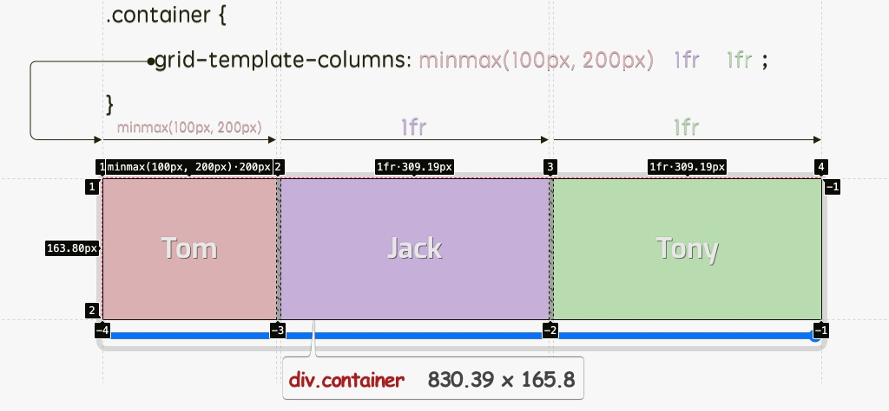</p>

<p>我们来考虑一下不同宽度的网格容器，可以拖动示例中的滑块来调整网格容器的宽度：</p>

<ul>
<li>当网格容器宽度足够宽时，<code>minmax(100px, 200px)</code> 返回的值是 <code>200px</code>，即第一列的网格轨道宽度是 <code>200px</code>（<code>max</code>的值）</li>
<li>当网格容器宽度调到很小时（比如 <code>200px</code>），<code>minmax(100px, 200px)</code> 返回的值是 <code>100px</code>，即第一列的网格轨道宽度是 <code>100px</code>（<code>min</code>的值）</li>
<li>另外，<code>minmax(100px, 200px)</code> 还会返回一个 <code>100px ~ 200px</code> 之间的值，比如当容网格容器宽度是 <code>290px</code>时，<code>minmax(100px, 200px)</code> 返回的值就是 <code>143px</code></li>
</ul>

<p>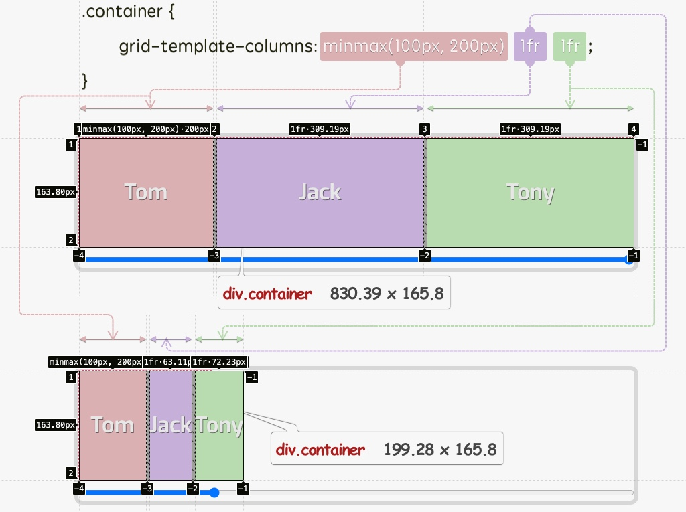</p>

<p>在这个示例中，<code>minmax(min, max)</code> 函数中的 <code>min</code> 和 <code>max</code> 都是静态的长度值（<code>&lt;length&gt;</code>），并且只在一个网格轨道中使用 <code>minmax(min, max)</code>函数。其实，我们还可以使用 <code>minmax(min, max)</code> 在一个以上的网格轨道中使用。比如，我们把上面示例中的两个 <code>1fr</code> 都换成 <code>minmax(100px, 200px)</code>，当然你也可以换成任何你希望使用的值：</p>

<pre class="css"><code class="css"><span class="class"><span class="class">.container</span></span> <span class="rules"><span class="rules">{
    <span class="rule"><span class="attribute"><span class="rule"><span class="attribute">grid-template-columns</span></span></span><span class="rule">:<span class="value"><span class="value"> <span class="function"><span class="function">minmax(<span class="number"><span class="number">100</span></span>px, <span class="number"><span class="number">200</span></span>px)</span></span> <span class="function"><span class="function">minmax(<span class="number"><span class="number">100</span></span>px, <span class="number"><span class="number">200</span></span>px)</span></span> <span class="function"><span class="function">minmax(<span class="number"><span class="number">100</span></span>px, <span class="number"><span class="number">200</span></span>px)</span></span>
}</span></span></span><span class="value"></span></span></span><span class="rule"><span class="value"></span></span></span>
</code></pre>

<div style="margin-bottom: 20px">
<iframe height="500" style="width: 100%;" scrolling="no" title="Grid Tracks Size with minmax() Function" src="./Grid布局：5-网格中的可用函数_files/qBrZBNR(1).html" frameborder="no" loading="lazy" allowtransparency="true" allowfullscreen="true">
  See the Pen <a rel="nofollow" href='https://codepen.io/airen/pen/qBrZBNR'>Grid Tracks Size with minmax() Function</a> by Airen
  (<a rel="nofollow" href='https://codepen.io/airen'>@airen</a>) on <a rel="nofollow" href='https://codepen.io'>CodePen</a>.
</iframe>
</div>

<p>这个示例，三列网格轨道宽度都会在 <code>100px ~ 200px</code> 之间变动，最大是<code>200px</code>，最小是<code>100px</code>：</p>

<p>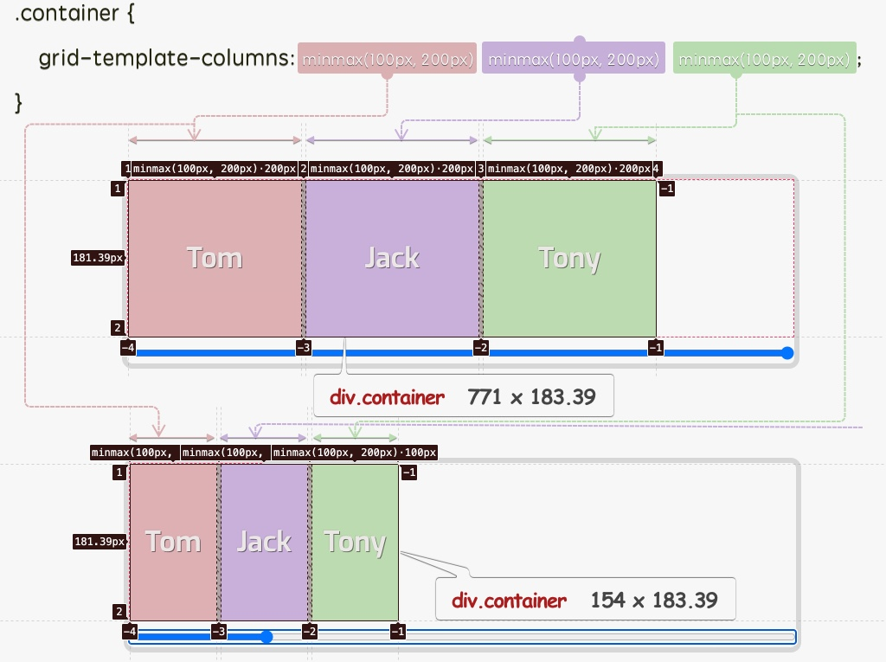</p>

<p>除了静态值，<code>minmax(min, max)</code> 函数中的两个参数 <code>min</code> 和 <code>max</code> 还可接受一些动态值（需要计算的值），比如我们熟悉的<code>%</code>和<code>fr</code>。通过使用它们，我们可以定义既具响应式（Responsiv），又能根据网格容器可用空间改变网格轨道尺寸。比如下面这个示例：</p>

<pre class="css"><code class="css"><span class="class"><span class="class">.container</span></span> <span class="rules"><span class="rules">{
    <span class="rule"><span class="attribute"><span class="rule"><span class="attribute">grid-template-columns</span></span></span><span class="rule">:<span class="value"><span class="value"> <span class="function"><span class="function">minmax(<span class="number"><span class="number">30</span></span>%, <span class="number"><span class="number">50</span></span>%)</span></span> <span class="number"><span class="number">1</span></span>fr <span class="number"><span class="number">1</span></span>fr;</span></span></span><span class="value"></span></span>
<span class="rule"><span class="rule">}</span></span></span><span class="rule"></span></span>
</code></pre>

<div style="margin-bottom: 20px">
<iframe height="500" style="width: 100%;" scrolling="no" title="Grid Tracks Size with minmax() Function" src="./Grid布局：5-网格中的可用函数_files/WNpwNYe(1).html" frameborder="no" loading="lazy" allowtransparency="true" allowfullscreen="true">
  See the Pen <a rel="nofollow" href='https://codepen.io/airen/pen/WNpwNYe'>Grid Tracks Size with minmax() Function</a> by Airen
  (<a rel="nofollow" href='https://codepen.io/airen'>@airen</a>) on <a rel="nofollow" href='https://codepen.io'>CodePen</a>.
</iframe>
</div>

<p>这个示例定义的网格，其中第一列网格轨道的宽度在 <code>30% ~ 50%</code>之间，而第二列和第三列使用的是<code>1fr</code>，即网格容器可用空间宽度的<code>1/2</code>（即网格容器可用空间宽度的<code>50%</code>）。你可以尝试着拖动示例中的滑块，当网格容器宽度改变之后，第一列网格轨道大小也会随之改，在这个示例中，有可能小到<code>0</code>，这是因为网格容器宽度是相对于其父容器按百分比计算的：</p>

<div style="margin-bottom: 20px">
<video controls="" width="100%" style="width: 100%; aspect-ratio: 16 / 9;" poster="/sites/default/files/blogs/2021/2105/css-grid-108.jpg">
    <source src="Grid布局：5-网格中的可用函数_files/css-grid-108.mp4" type="video/mp4">
</video>
</div>

<p>你可能已经发现了，在<code>minmax(min, max)</code>函数两个参数都使用<code>&lt;percentage&gt;</code>的时候，会令我们感到困惑，我们来做一个假设：</p>

<table>
<thead>
<tr>
  <th><strong>网格容器宽度</strong></th>
  <th><strong><code>min = 30%</code></strong></th>
  <th><strong><code>max = 50%</code></strong></th>
  <th><strong><code>minmax(30%, 50%)</code>计算结果</strong></th>
</tr>
</thead>
<tbody>
<tr>
  <td><code>800px</code></td>
  <td><code>30% x 800 = 240px</code></td>
  <td><code>50% x 800 = 400px</code></td>
  <td><code>minmax(240px, 400px)</code></td>
</tr>
<tr>
  <td><code>600px</code></td>
  <td><code>30% x 600 = 180px</code></td>
  <td><code>50% x 600 = 300px</code></td>
  <td><code>minmax(180px, 300px)</code></td>
</tr>
<tr>
  <td><code>400px</code></td>
  <td><code>30% x 400 = 120px</code></td>
  <td><code>50% x 400 = 200px</code></td>
  <td><code>minmax(120px, 200px)</code></td>
</tr>
<tr>
  <td><code>200px</code></td>
  <td><code>30% x 200 = 60px</code></td>
  <td><code>50% x 200 = 100px</code></td>
  <td><code>minmax(60px, 100px)</code></td>
</tr>
<tr>
  <td><code>100px</code></td>
  <td><code>30% x 100 = 30px</code></td>
  <td><code>50% x 100 = 50px</code></td>
  <td><code>minmax(30px, 50px)</code></td>
</tr>
<tr>
  <td><code>0px</code></td>
  <td><code>30% x 0 = 0px</code></td>
  <td><code>50% x 0 = 0px</code></td>
  <td><code>minmax(0px, 0px)</code></td>
</tr>
</tbody>
</table>

<p>从上表可以知道 <code>minmax(30%, 50%)</code> 中的<code>min</code>和<code>max</code> 在根据网格容器宽度计算出来的<code>min</code>值总是小于<code>max</code>值，直到网格容器宽度为<code>0</code>时，<code>min</code>和<code>max</code>的值才相等。在这种情况之下，网格轨道尺寸还是根据<code>minmax(min, max)</code>返回值定义。假设在设置<code>minmax(30%, 50%)</code>列轨道中内容宽度为<code>0</code>（即该列中单元格宽度都为<code>0</code>），这个时候，该网格列轨道的宽度始终是<code>max</code>的值：</p>

<div style="margin-bottom: 20px">
<iframe height="500" style="width: 100%;" scrolling="no" title="Grid Tracks Size with minmax() Function" src="./Grid布局：5-网格中的可用函数_files/YzZqXqy(1).html" frameborder="no" loading="lazy" allowtransparency="true" allowfullscreen="true">
  See the Pen <a rel="nofollow" href='https://codepen.io/airen/pen/YzZqXqy'>Grid Tracks Size with minmax() Function</a> by Airen
  (<a rel="nofollow" href='https://codepen.io/airen'>@airen</a>) on <a rel="nofollow" href='https://codepen.io'>CodePen</a>.
</iframe>
</div>

<p>调整选择框中的值来改变网格容器的宽度，你将看到下面这样的效果：</p>

<div style="margin-bottom: 20px">
<video controls="" width="100%" style="width: 100%; aspect-ratio: 16 / 9;" poster="Grid布局：5-网格中的可用函数_files/css-grid-109.jpg">
    <source src="Grid布局：5-网格中的可用函数_files/css-grid-109.mp4" type="video/mp4">
</video>
</div>

<p>接着继续往下，在上面的示例基础上，在网格项目中添加一张 <code>150px x 150px</code> 图像，也就是网格轨道中的网格项目内容宽度是 <code>150px</code>：</p>

<table>
<thead>
<tr>
  <th><strong>网格容器宽度</strong></th>
  <th><strong>网格项目内容宽度</strong></th>
  <th><strong><code>min = 30%</code></strong></th>
  <th><strong><code>max = 50%</code></strong></th>
  <th><strong><code>minmax(30%, 50%)</code>计算结果</strong></th>
</tr>
</thead>
<tbody>
<tr>
  <td><code>800px</code></td>
  <td><code>150px</code></td>
  <td><code>30% x 800 = 240px</code></td>
  <td><code>50% x 800 = 400px</code></td>
  <td><code>minmax(240px, 400px)</code></td>
</tr>
<tr>
  <td><code>600px</code></td>
  <td><code>150px</code></td>
  <td><code>30% x 600 = 180px</code></td>
  <td><code>50% x 600 = 300px</code></td>
  <td><code>minmax(180px, 300px)</code></td>
</tr>
<tr>
  <td><code>400px</code></td>
  <td><code>150px</code></td>
  <td><code>30% x 400 = 120px</code></td>
  <td><code>50% x 400 = 200px</code></td>
  <td><code>minmax(120px, 200px)</code></td>
</tr>
<tr>
  <td><code>200px</code></td>
  <td><code>150px</code></td>
  <td><code>30% x 200 = 60px</code></td>
  <td><code>50% x 200 = 100px</code></td>
  <td><code>minmax(60px, 100px)</code></td>
</tr>
<tr>
  <td><code>100px</code></td>
  <td><code>150px</code></td>
  <td><code>30% x 100 = 30px</code></td>
  <td><code>50% x 100 = 50px</code></td>
  <td><code>minmax(30px, 50px)</code></td>
</tr>
<tr>
  <td><code>0px</code></td>
  <td><code>150px</code></td>
  <td><code>30% x 0 = 0px</code></td>
  <td><code>50% x 0 = 0px</code></td>
  <td><code>minmax(0px, 0px)</code></td>
</tr>
</tbody>
</table>

<p>最终网格轨道的宽度<code>minmax(30%, 50%)</code>返回的还是<code>max</code>的值：</p>

<div style="margin-bottom: 20px">
<iframe height="500" style="width: 100%;" scrolling="no" title="Grid Tracks Size with minmax() Function" src="./Grid布局：5-网格中的可用函数_files/ExWKjQq(1).html" frameborder="no" loading="lazy" allowtransparency="true" allowfullscreen="true">
  See the Pen <a rel="nofollow" href='https://codepen.io/airen/pen/ExWKjQq'>Grid Tracks Size with minmax() Function</a> by Airen
  (<a rel="nofollow" href='https://codepen.io/airen'>@airen</a>) on <a rel="nofollow" href='https://codepen.io'>CodePen</a>.
</iframe>
</div>

<p>换句话说，在<code>minmax(min, max)</code>中使用<code>&lt;percentage&gt;</code>时，不建议<code>min</code>和<code>max</code>都取<code>&lt;percentage&gt;</code>值，即使都是该百分类型的值，最终返回的是<code>max</code>值。也因此，更建议在<code>minmax(min, max)</code>中把<code>%</code>值和其他类型值结合起来使用，比如：</p>

<pre class="xml"><code class="xml">/* <span class="tag"><span class="tag">&lt;<span class="title"><span class="title">inflexible-breadth</span></span>&gt;</span></span>, <span class="tag"><span class="tag">&lt;<span class="title"><span class="title">track-breadth</span></span>&gt;</span></span> 值 */
minmax(400px, 50%) // ~&gt; min = 400px; max = 50%
minmax(30%, 300px) // ~&gt; min = 30%;   max = 300px

/* <span class="tag"><span class="tag">&lt;<span class="title"><span class="title">fixed-breadth</span></span>&gt;</span></span>, <span class="tag"><span class="tag">&lt;<span class="title"><span class="title">track-breadth</span></span>&gt;</span></span> 值 */
minmax(1fr, 50%)         // ~&gt; min = 1fr;   max = 50%
minmax(400px, 50%)       // ~&gt; min = 400px; max = 50%
minmax(30%, 300px)       // ~&gt; min = 30%;   max = 300px
minmax(50%, min-content) // ~&gt; min = 50%;   max = min-content

/* <span class="tag"><span class="tag">&lt;<span class="title"><span class="title">inflexible-breadth</span></span>&gt;</span></span>, <span class="tag"><span class="tag">&lt;<span class="title"><span class="title">fixed-breadth</span></span>&gt;</span></span> 值 */
minmax(400px, 50%)       // ~&gt; min = 400px;        max = 50%
minmax(30%, 300px)       // ~&gt; min = 30%;          max = 300px
minmax(min-content, 50%) // ~&gt; min = min-content   max = 50%
</code></pre>

<p>只不过，这样结合在一起使用的时候，<code>minmax(min, max)</code>中的<code>max</code>有可能会比<code>min</code>值小，比如：</p>

<pre class="css"><code class="css"><span class="class"><span class="class">.container</span></span> <span class="rules"><span class="rules">{
    <span class="rule"><span class="attribute"><span class="rule"><span class="attribute">grid-template-columns</span></span></span><span class="rule">:<span class="value"><span class="value"> <span class="function"><span class="function">minmax(<span class="number"><span class="number">300</span></span>px, <span class="number"><span class="number">50</span></span>%)</span></span>;</span></span></span><span class="value"></span></span>
<span class="rule"><span class="rule">}</span></span></span><span class="rule"></span></span>
</code></pre>

<p>当网格容器宽度小于<code>600px</code>时，<code>max</code>返回的值就会比<code>min</code>小，例如网格容器宽度是<code>400px</code>时，<code>max = 50% x 400 = 200px</code>，即 <code>max = 200px</code>，这个时候<code>max</code>将会忽略，那么<code>minmax(min, max)</code>返回的值是<code>min</code>，即<code>300px</code>：</p>

<div style="margin-bottom: 20px">
<iframe height="500" style="width: 100%;" scrolling="no" title="Grid Tracks Size with minmax() Function" src="./Grid布局：5-网格中的可用函数_files/XWMdMpe(1).html" frameborder="no" loading="lazy" allowtransparency="true" allowfullscreen="true">
  See the Pen <a rel="nofollow" href='https://codepen.io/airen/pen/XWMdMpe'>Grid Tracks Size with minmax() Function</a> by Airen
  (<a rel="nofollow" href='https://codepen.io/airen'>@airen</a>) on <a rel="nofollow" href='https://codepen.io'>CodePen</a>.
</iframe>
</div>

<p>调整示例中百分比，你能看到效果如下：</p>

<p>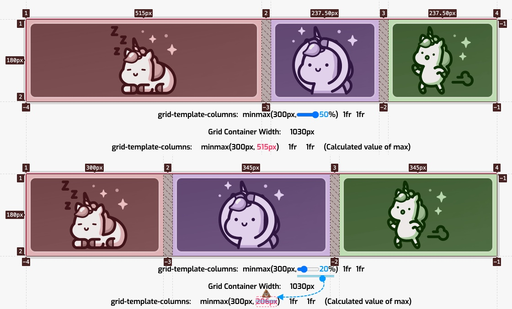</p>

<p>这个观点是通用的：</p>

<blockquote>
  <p><strong><code>minmax(min, max)</code>函数，如果 <code>max</code> 小于 <code>min</code> 时，<code>max</code> 将会被忽略，最终 <code>minmax(min, max)</code> 将会取 <code>min</code> 的值。</strong></p>
</blockquote>

<p></p>

<p>换句话说，当我们在 <code>minmax(min, max)</code> 函数中使用动态值时（会相对其他属性进行计算，比如上面示例中所说的 <code>%</code>，和接下来示例中要用到的<code>fr</code>），设置一个有意义的规则至关重要。比如下面这个示例，对定义网格轨道没有任何意义：</p>

<pre class="css"><code class="css"><span class="class"><span class="class">.container</span></span> <span class="rules"><span class="rules">{
    <span class="rule"><span class="attribute"><span class="rule"><span class="attribute">grid-template-columns</span></span></span><span class="rule">:<span class="value"><span class="value"> <span class="function"><span class="function">minmax(<span class="number"><span class="number">1</span></span>fr, <span class="number"><span class="number">2</span></span>fr)</span></span> <span class="number"><span class="number">1</span></span>fr <span class="number"><span class="number">1</span></span>fr;</span></span></span><span class="value"></span></span>
<span class="rule"><span class="rule">}</span></span></span><span class="rule"></span></span>
</code></pre>

<div style="margin-bottom: 20px">
<iframe height="600" style="width: 100%;" scrolling="no" title="Grid Tracks Size with minmax() Function" src="./Grid布局：5-网格中的可用函数_files/mdWPXom(1).html" frameborder="no" loading="lazy" allowtransparency="true" allowfullscreen="true">
  See the Pen <a rel="nofollow" href='https://codepen.io/airen/pen/mdWPXom'>Grid Tracks Size with minmax() Function</a> by Airen
  (<a rel="nofollow" href='https://codepen.io/airen'>@airen</a>) on <a rel="nofollow" href='https://codepen.io'>CodePen</a>.
</iframe>
</div>

<p>示例中的 <code>minmax(1fr, 2fr)</code> 就是没有意义的一种设置，因为浏览器无法决定 <code>minmax(min, max)</code> 函数应该使用哪个值：</p>

<ul>
<li>如果 <code>minmax(1fr, 2fr)</code> 使用 <code>min</code> 值，则会是 <code>1fr 1fr 1fr</code>，按照前面介绍的 <code>fr</code>，那么 <code>1fr = 1 / 3</code></li>
<li>如果 <code>minmax(1fr, 2fr)</code> 使用 <code>max</code> 值，则会是 <code>2fr 1fr 1fr</code>, 按照前面介绍的 <code>fr</code>，那么 <code>1fr = 1 / 4</code></li>
</ul>

<p>而且使用开发者工具查看代码的时候，你会发现 <code>minmax(1fr, 2fr)</code> 用于设置网格轨道尺寸的属性中时，将是无效的：</p>

<p>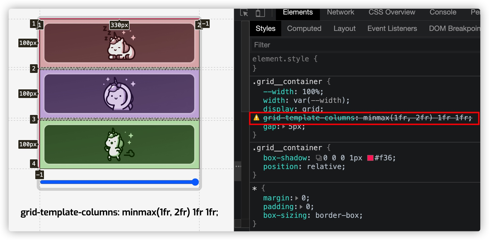</p>

<p>针对这一点，W3C 规范中有做过相应的描述：</p>

<p>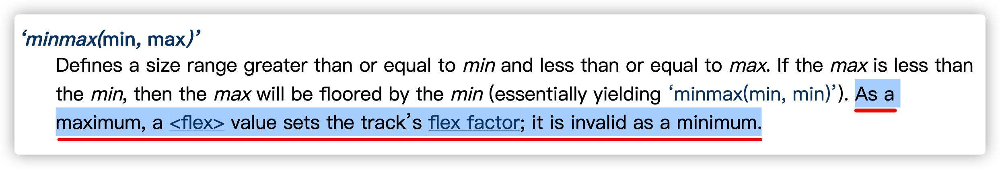</p>

<p>也就是说，如果你想在 <code>minmax(min, max)</code> 函数中使用 <code>fr</code> 单位时，只能用于<code>max</code>值中。换句话说，<code>minmax(min, max)</code> 中<code>max</code>取<code>fr</code>值，可以和设置其他单位（除<code>fr</code>之外）值的<code>min</code>混合使用，比如<code>minmax(200px, 1fr)</code>。即使是这样，也有可能 <code>1fr</code> 计算出来的值会小于<code>200px</code>，不过要是出现这种现象，<code>minmax(200px, 1fr)</code>并不会无效，只不过最终会取<code>min</code>的值<code>200px</code>。</p>

<pre class="css"><code class="css"><span class="class"><span class="class">.container</span></span> <span class="rules"><span class="rules">{
    <span class="rule"><span class="attribute"><span class="rule"><span class="attribute">grid-template-columns</span></span></span><span class="rule">:<span class="value"><span class="value"> <span class="function"><span class="function">minmax(<span class="number"><span class="number">200</span></span>px, <span class="number"><span class="number">1</span></span>fr)</span></span> <span class="number"><span class="number">1</span></span>fr <span class="number"><span class="number">1</span></span>fr;</span></span></span><span class="value"></span></span>
<span class="rule"><span class="rule">}</span></span></span><span class="rule"></span></span>
</code></pre>

<div style="margin-bottom: 20px">
<iframe height="500" style="width: 100%;" scrolling="no" title="Grid Tracks Size with minmax() Function" src="./Grid布局：5-网格中的可用函数_files/JjWXLyE(1).html" frameborder="no" loading="lazy" allowtransparency="true" allowfullscreen="true">
  See the Pen <a rel="nofollow" href='https://codepen.io/airen/pen/JjWXLyE'>Grid Tracks Size with minmax() Function</a> by Airen
  (<a rel="nofollow" href='https://codepen.io/airen'>@airen</a>) on <a rel="nofollow" href='https://codepen.io'>CodePen</a>.
</iframe>
</div>

<p>拖动示例中滑块，当网格容器宽度变成 <code>550px</code> 时，<code>minmax(200px, 1fr)</code> 将会取<code>min</code>的值<code>200px</code>：</p>

<p>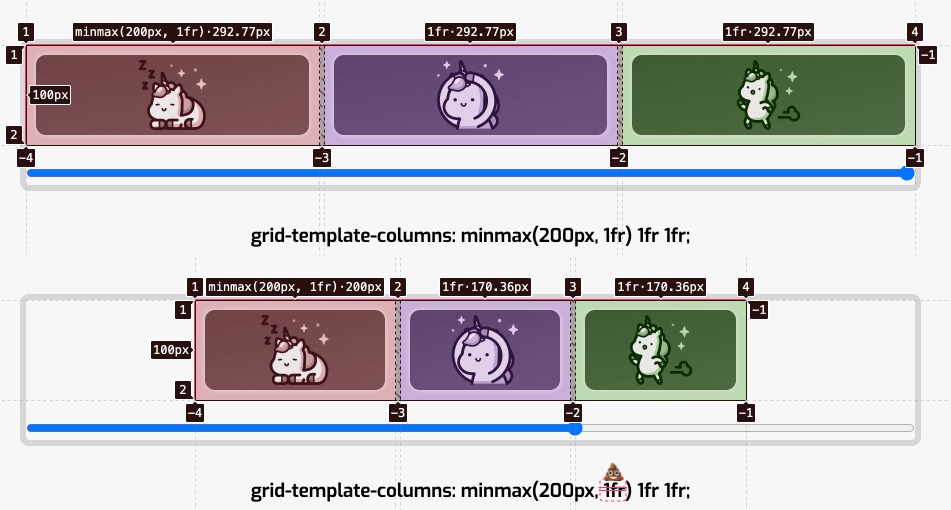</p>

<p>前面在和大家演示 <code>minmax(min, max)</code> 函数中<code>min</code> 和 <code>max</code> 传 <code>%</code> 值时，演示了 <code>0%</code> 的一个场景，但并没有详细的说 <code>minmax(min, max)</code> 中的 <code>min</code> 值为<code>0</code> 时会发生什么？比如：</p>

<pre class="css"><code class="css"><span class="class"><span class="class">.container</span></span> <span class="rules"><span class="rules">{
    <span class="rule"><span class="attribute"><span class="rule"><span class="attribute">grid-template-columns</span></span></span><span class="rule">:<span class="value"><span class="value"> <span class="function"><span class="function">minmax(<span class="number"><span class="number">0</span></span>, <span class="number"><span class="number">300</span></span>px)</span></span> <span class="number"><span class="number">1</span></span>fr <span class="number"><span class="number">1</span></span>fr;</span></span></span><span class="value"></span></span>
<span class="rule"><span class="rule">}</span></span></span><span class="rule"></span></span>
</code></pre>

<div style="margin-bottom: 20px">
<iframe height="500" style="width: 100%;" scrolling="no" title="Grid Tracks Size with minmax() Function" src="./Grid布局：5-网格中的可用函数_files/zYZBOOL(1).html" frameborder="no" loading="lazy" allowtransparency="true" allowfullscreen="true">
  See the Pen <a rel="nofollow" href='https://codepen.io/airen/pen/zYZBOOL'>Grid Tracks Size with minmax() Function</a> by Airen
  (<a rel="nofollow" href='https://codepen.io/airen'>@airen</a>) on <a rel="nofollow" href='https://codepen.io'>CodePen</a>.
</iframe>
</div>

<p>你猜对了！设置<code>minmax(0, 300px)</code> 的网格轨道的宽度是在 <code>0 ~ 300px</code> 之间变化，最小为 <code>0</code>，最大不会超过 <code>300px</code>。</p>

<div style="margin-bottom: 20px">
<video controls="" width="100%" style="width: 100%; aspect-ratio: 16 / 9;" poster="/sites/default/files/blogs/2021/2105/css-grid-115.jpg">
    <source src="Grid布局：5-网格中的可用函数_files/css-grid-115.mp4" type="video/mp4">
</video>
</div>

<p>在<code>minmax(min, max)</code> 函数中除了使用固定的<code>&lt;length&gt;</code>值，动态值，还可以使用一些关键词，比如前面介绍的 <code>min-content</code>、<code>max-content</code> 和 <code>auto</code>等。如果网格列轨道使用这些关键词将网格轨道的尺寸与它所包含的内容关连起来。</p>

<pre class="css"><code class="css"><span class="class"><span class="class">.container</span></span> <span class="rules"><span class="rules">{
    <span class="rule"><span class="attribute"><span class="rule"><span class="attribute">grid-template-columns</span></span></span><span class="rule">:<span class="value"><span class="value"> <span class="function"><span class="function">minmax(min-content, max-content)</span></span> <span class="function"><span class="function">minmax(auto, <span class="number"><span class="number">1</span></span>fr)</span></span> <span class="number"><span class="number">1</span></span>fr;</span></span></span><span class="value"></span></span>
<span class="rule"><span class="rule">}</span></span></span><span class="rule"></span></span>
</code></pre>

<div style="margin-bottomm: 20px">
<iframe height="540" style="width: 100%;" scrolling="no" title="Grid Tracks Size with minmax() Function" src="./Grid布局：5-网格中的可用函数_files/oNZLvYK(1).html" frameborder="no" loading="lazy" allowtransparency="true" allowfullscreen="true">
  See the Pen <a rel="nofollow" href='https://codepen.io/airen/pen/oNZLvYK'>Grid Tracks Size with minmax() Function</a> by Airen
  (<a rel="nofollow" href='https://codepen.io/airen'>@airen</a>) on <a rel="nofollow" href='https://codepen.io'>CodePen</a>.
</iframe>
</div>

<p>拖动示例滑块，可以看到相关变化：</p>

<div style="margin-bottom: 20px">
<video controls="" width="100%" style="width: 100%; aspect-ratio: 16 / 9;" poster="/sites/default/files/blogs/2021/2105/css-grid-116.jpg">
    <source src="Grid布局：5-网格中的可用函数_files/css-grid-116.mp4" type="video/mp4">
</video>
</div>

<p>在<code>minmax(min, max)</code>中使用相关关键词时，<code>minmax(min-content, min-content)</code> 等同于 <code>min-content</code>，即：</p>

<pre class="cpp"><code class="cpp">.container {
    grid-<span class="keyword"><span class="keyword">template</span></span>-columns: min-content;
}

<span class="comment"><span class="comment">// 等同</span></span>
.container {
    grid-<span class="keyword"><span class="keyword">template</span></span>-columns: minmax(min-content, min-content)
}
</code></pre>

<p>在<code>minmax(min, max)</code>函数中同时使用<code>min-content</code>和<code>max-content</code>时，可以得到一个响应性强，内容不会溢出，不会比其最宽的元素更宽等特性的网格。</p>

<p>在<code>minmax(min, max)</code>函数中使用关键词 <code>auto</code> 时：</p>

<ul>
<li>当<code>auto</code> 作为<code>max</code>值使用时（<code>minmax(100px, auto)</code>），其值与<code>max-content</code>（<code>minmax(100px, max-content)</code>）等同</li>
<li>当<code>auto</code> 作为<code>min</code>值使用时，它的值由 <code>min-width</code>（或<code>min-height</code>）指定，这意味着，<code>auto</code>有时与<code>min-content</code>等同，但并非总是如此</li>
</ul>

<p>不过 <code>fit-content</code> 和 <code>fit-content()</code> 不能用于<code>minmax(min, max)</code>函数中。</p>

<p>我们来看一个<code>minmax(min, max)</code>用例，使用它来创建一个布局，这个布局就是让内容水平居中：</p>

<pre class="css"><code class="css"><span class="class"><span class="class">.container</span></span> <span class="rules"><span class="rules">{
    <span class="rule"><span class="attribute"><span class="rule"><span class="attribute">display</span></span></span><span class="rule">:<span class="value"><span class="value"> grid;</span></span></span><span class="value"></span></span>
    <span class="rule"><span class="attribute"><span class="rule"><span class="attribute">grid-template-columns</span></span></span><span class="rule">:<span class="value"><span class="value"> <span class="function"><span class="function">minmax(<span class="number"><span class="number">1</span></span>rem, <span class="number"><span class="number">1</span></span>fr)</span></span> <span class="function"><span class="function">minmax(auto, <span class="number"><span class="number">70</span></span>ch)</span></span> <span class="function"><span class="function">minmax(<span class="number"><span class="number">1</span></span>rem, <span class="number"><span class="number">1</span></span>fr)</span></span>;</span></span></span><span class="value"></span></span>
<span class="rule"><span class="rule">}</span></span></span><span class="rule"></span></span>
</code></pre>

<div style="margin-bottom: 20px">
<iframe height="500" style="width: 100%;" scrolling="no" title="Grid Layout with minmax: Usage Of ch Unit For A Content Wrapper" src="./Grid布局：5-网格中的可用函数_files/PopzYXj(1).html" frameborder="no" loading="lazy" allowtransparency="true" allowfullscreen="true">
  See the Pen <a rel="nofollow" href='https://codepen.io/airen/pen/PopzYXj'>Grid Layout with minmax: Usage Of ch Unit For A Content Wrapper</a> by Airen
  (<a rel="nofollow" href='https://codepen.io/airen'>@airen</a>) on <a rel="nofollow" href='https://codepen.io'>CodePen</a>.
</iframe>
</div>

<p>第一列和最后一列充当了网格沟槽，如果屏幕宽度没有足够空间，<code>minmax(1rem, 1fr)</code> 会取<code>1rem</code>；如果有足够空间，那么会取 <code>1fr</code>，足剩余空间宽度的 <code>50%</code>。</p>

<p>第二列（设置<code>minmax(auto, 70ch)</code>）才是重点，这意味着，这一列的最大宽度是每行 <code>70</code> 个字符。这是一个理想的字符长度，易于提高内容的可读性：</p>

<div style="margin-bottom: 20px">
<video controls="" width="100%" style="width: 100%; aspect-ratio: 16 / 9;" poster="/sites/default/files/blogs/2021/2105/css-grid-117.jpg">
    <source src="Grid布局：5-网格中的可用函数_files/css-grid-117.mp4" type="video/mp4">
</video>
</div>

<h2 class="content-title" data-index="2">min()、max() 和 clamp()</h2>

<p><code>min()</code>、<code>max()</code> 和 <code>clamp()</code> 是 <a href="https://www.w3cplus.com/css/css-functions-guide.html" target="_blank">CSS 函数</a>中的一部分，被称为 <strong><a href="https://www.w3cplus.com/css/min-max-clamp-function.html" target="_blank">比较函数</a></strong> 。它们和<code>minmax(min, max)</code>完全不同：</p>

<ul>
<li><strong><code>minmax(min, max)</code></strong> 返回的是 <code>min~max</code> 之间的一个值，最小是<code>min</code>，最大是 <code>max</code></li>
<li><strong><code>min()</code></strong> 返回的是函数列表参数中最小的值，比如 <code>min(100px, 200px)</code>返回的是 <code>100px</code></li>
<li><strong><code>max()</code></strong> 返回的是函数列表参数中最大的值，比如 <code>max(100px, 200px)</code>返回的是 <code>200px</code></li>
<li><strong><code>clamp(MIN, VAL, MAX)</code></strong> 更类似于<code>minmax(min, max)</code>，返回的是一个区间值。即 <code>clamp(MIN, VAL, MAX)</code>，其中<code>MIN</code>表示最小值，<code>VAL</code>表示首选值，<code>MAX</code>表示最大值。如果<code>VAL</code>在<code>MIN</code>和<code>MAX</code>之间，则使用<code>VAL</code>作为函数的返回值；如果<code>VAL</code>大于<code>MAX</code>，则使用<code>MAX</code>作为函数的返回值；如果<code>VAL</code>小于<code>MIN</code>，则使用<code>MIN</code>作为函数的返回值</li>
</ul>

<blockquote>
  <p>有关于 CSS 的比较函数 <code>min()</code>、<code>max()</code> 和 <code>clamp()</code> 更详细的介绍，可以阅读《<a href="https://www.w3cplus.com/css/min-max-clamp-function.html" target="_blank">聊聊<code>min()</code>，<code>max()</code>和<code>clamp()</code>函数</a>》一文。</p>
</blockquote>

<p>虽然 <code>min()</code>、<code>max()</code> 和 <code>clamp()</code> 函数非常优秀，但直接用于<code>grid-template-columns</code>或<code>grid-template-rows</code>属性中将是无效的：</p>

<pre class="css"><code class="css"><span class="class"><span class="class">.container</span></span> <span class="rules"><span class="rules">{
    <span class="rule"><span class="attribute"><span class="rule"><span class="attribute">grid-template-columns</span></span></span><span class="rule">:<span class="value"><span class="value"> <span class="function"><span class="function">min(<span class="number"><span class="number">80</span></span>px, <span class="number"><span class="number">1</span></span>fr)</span></span> <span class="function"><span class="function">clamp(<span class="number"><span class="number">300</span></span>px, <span class="number"><span class="number">20</span></span>vw, <span class="number"><span class="number">1</span></span>fr)</span></span> <span class="function"><span class="function">max(auto, <span class="number"><span class="number">80</span></span>px)</span></span>
}</span></span></span><span class="value"></span></span></span><span class="rule"><span class="value"></span></span></span>
</code></pre>

<p>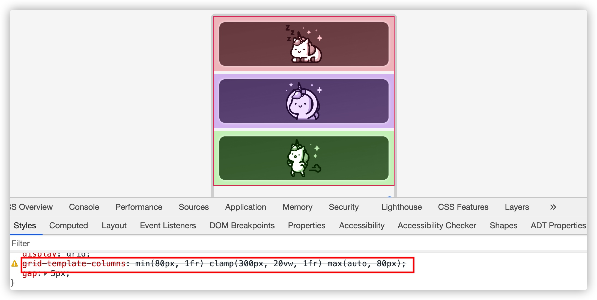</p>

<p>不过他们可以用于 <code>gap</code> 属性上：</p>

<pre class="css"><code class="css"><span class="class"><span class="class">.container</span></span> <span class="rules"><span class="rules">{
    <span class="rule"><span class="attribute"><span class="rule"><span class="attribute">display</span></span></span><span class="rule">:<span class="value"><span class="value"> grid;</span></span></span><span class="value"></span></span>
    <span class="rule"><span class="attribute"><span class="rule"><span class="attribute">grid-template-columns</span></span></span><span class="rule">:<span class="value"><span class="value"> <span class="function"><span class="function">repeat(auto-fit, minmax(<span class="number"><span class="number">200</span></span>px, <span class="number"><span class="number">1</span></span>fr)</span></span>);</span></span></span><span class="value"></span></span>
    <span class="rule"><span class="attribute"><span class="rule"><span class="attribute">grid-gap</span></span></span><span class="rule">:<span class="value"><span class="value"> <span class="function"><span class="function">clamp(<span class="number"><span class="number">1</span></span>rem, <span class="number"><span class="number">2</span></span>vw, <span class="number"><span class="number">24</span></span>px)</span></span>;</span></span></span><span class="value"></span></span>
<span class="rule"><span class="rule">}</span></span></span><span class="rule"></span></span>
</code></pre>

<div style="margin-bottom: 20px">
<iframe height="500" style="width: 100%;" scrolling="no" title="Grid Gap with CSS Comparison Functions" src="./Grid布局：5-网格中的可用函数_files/rNyLNwa(2).html" frameborder="no" loading="lazy" allowtransparency="true" allowfullscreen="true">
  See the Pen <a rel="nofollow" href='https://codepen.io/airen/pen/rNyLNwa'>Grid Gap with CSS Comparison Functions</a> by Airen
  (<a rel="nofollow" href='https://codepen.io/airen'>@airen</a>) on <a rel="nofollow" href='https://codepen.io'>CodePen</a>.
</iframe>
</div>

<p>虽然 <code>min()</code>、<code>max()</code> 和 <code>clamp()</code> 函数直接使用<code>grid-template-columns</code>和<code>grid-template-rows</code>（设置网格轨道尺寸的属性）无效，但他们结合 <code>minmax(min, max)</code> 函数中却是有效的。<a rel="nofollow" href="https://twitter.com/TerribleMia" target="_blank">@TerribleMia</a> 在 <a rel="nofollow" href="https://twitter.com/TerribleMia/status/1261029051457658880" target="_blank">Twitter 上也分享了这个话题</a>：</p>

<p><a rel="nofollow" href="https://twitter.com/TerribleMia/status/1261029051457658880" target="_blank">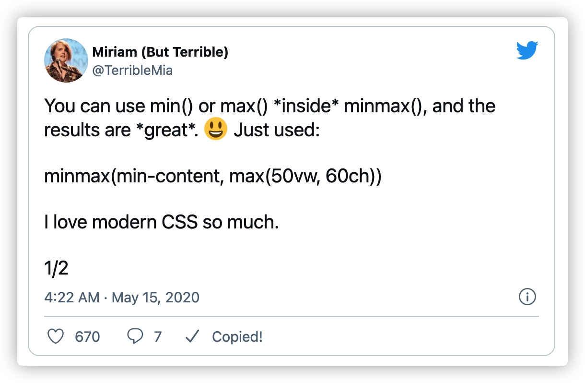</a></p>

<pre class="css"><code class="css"><span class="class"><span class="class">.container</span></span> <span class="rules"><span class="rules">{
    <span class="rule"><span class="attribute"><span class="rule"><span class="attribute">grid-template-columns</span></span></span><span class="rule">:<span class="value"><span class="value"> auto <span class="function"><span class="function">minmax(min-content, max(<span class="number"><span class="number">60</span></span>ch, <span class="number"><span class="number">50</span></span>vw)</span></span>) <span class="number"><span class="number">1</span></span>fr;</span></span></span><span class="value"></span></span>
    <span class="rule"><span class="attribute"><span class="rule"><span class="attribute">grid-gap</span></span></span><span class="rule">:<span class="value"><span class="value"> <span class="function"><span class="function">clamp(<span class="number"><span class="number">1</span></span>rem, <span class="number"><span class="number">2</span></span>vw, <span class="number"><span class="number">24</span></span>px)</span></span>;</span></span></span><span class="value"></span></span>
<span class="rule"><span class="rule">}</span></span></span><span class="rule"></span></span>
</code></pre>

<div style="margin-bottom: 20px">
<iframe height="540" style="width: 100%;" scrolling="no" title="Grid Gap with CSS Comparison Functions" src="./Grid布局：5-网格中的可用函数_files/rNyLNwa(3).html" frameborder="no" loading="lazy" allowtransparency="true" allowfullscreen="true">
  See the Pen <a rel="nofollow" href='https://codepen.io/airen/pen/rNyLNwa'>Grid Gap with CSS Comparison Functions</a> by Airen
  (<a rel="nofollow" href='https://codepen.io/airen'>@airen</a>) on <a rel="nofollow" href='https://codepen.io'>CodePen</a>.
</iframe>
</div>

<h2 class="content-title" data-index="2">repeat()</h2>

<p>前面有多个示例，在<code>grid-template-columns</code> 中设置值时有相同的值，比如：</p>

<pre class="css"><code class="css"><span class="class"><span class="class">.container</span></span> <span class="rules"><span class="rules">{
    <span class="rule"><span class="attribute"><span class="rule"><span class="attribute">grid-template-columns</span></span></span><span class="rule">:<span class="value"><span class="value"> <span class="number"><span class="number">1</span></span>fr <span class="number"><span class="number">1</span></span>fr <span class="number"><span class="number">1</span></span>fr;</span></span></span><span class="value"></span></span>
<span class="rule"><span class="rule">}</span></span></span><span class="rule"></span></span>
</code></pre>

<p>在 CSS 网格布局中提供了一个叫 <code>repeat()</code> 的函数，可以帮我们把上面的代码变得更简洁：</p>

<pre class="css"><code class="css"><span class="class"><span class="class">.container</span></span> <span class="rules"><span class="rules">{
    <span class="rule"><span class="attribute"><span class="rule"><span class="attribute">grid-template-columns</span></span></span><span class="rule">:<span class="value"><span class="value"> <span class="function"><span class="function">repeat(<span class="number"><span class="number">3</span></span>, <span class="number"><span class="number">1</span></span>fr)</span></span>
}</span></span></span><span class="value"></span></span></span><span class="rule"><span class="value"></span></span></span>
</code></pre>

<p><code>repeat()</code> 函数表示网格轨道列表的重复片段，允许以更紧凑的形式写入大量显示重复模式的网格轨道（列或行）。该函数可以用于 <code>grid-template-columns</code> 和 <code>grid-template-rows</code> 属性，用来设置网格轨道尺寸大小。</p>

<p><code>repeat()</code> 语法的通用形式是：</p>

<pre class="javascript"><code class="javascript">repeat( [ <span class="xml"><span class="tag"><span class="xml"><span class="tag">&lt;<span class="title"><span class="title">integer</span></span> [<span class="attribute"><span class="attribute">1</span></span>,∞]&gt;</span></span></span><span class="xml"> | auto-fill | auto-fit ] , <span class="tag"><span class="tag">&lt;<span class="title"><span class="title">track-list</span></span>&gt;</span></span> )
</span></span></code></pre>

<p>第一个参数用来指定重复的次数，第二个参数是一个轨道列表，它被重复该次数。然而，有一些限制：</p>

<ul>
<li><code>repeat()</code> 函数不能被嵌套</li>
<li>自动重复（<code>auto-fill</code> 或 <code>auto-fit</code>）不能与内在的或或灵活的尺寸相结合</li>
</ul>

<p>因此，<code>repeat()</code> 函数精确的语法有下面几种形式：</p>

<pre class="xml"><code class="xml"><span class="tag"><span class="tag">&lt;<span class="title"><span class="title">track-repeat</span></span>&gt;</span></span> = repeat( [ <span class="tag"><span class="tag">&lt;<span class="title"><span class="title">integer</span></span> [<span class="attribute"><span class="attribute">1</span></span>,∞]&gt;</span></span> ] , [ <span class="tag"><span class="tag">&lt;<span class="title"><span class="title">line-names</span></span>&gt;</span></span>? <span class="tag"><span class="tag">&lt;<span class="title"><span class="title">track-size</span></span>&gt;</span></span> ]+ <span class="tag"><span class="tag">&lt;<span class="title"><span class="title">line-names</span></span>&gt;</span></span>? )
<span class="tag"><span class="tag">&lt;<span class="title"><span class="title">auto-repeat</span></span>&gt;</span></span>  = repeat( [ auto-fill | auto-fit ] , [ <span class="tag"><span class="tag">&lt;<span class="title"><span class="title">line-names</span></span>&gt;</span></span>? <span class="tag"><span class="tag">&lt;<span class="title"><span class="title">fixed-size</span></span>&gt;</span></span> ]+ <span class="tag"><span class="tag">&lt;<span class="title"><span class="title">line-names</span></span>&gt;</span></span>? )
<span class="tag"><span class="tag">&lt;<span class="title"><span class="title">fixed-repeat</span></span>&gt;</span></span> = repeat( [ <span class="tag"><span class="tag">&lt;<span class="title"><span class="title">integer</span></span> [<span class="attribute"><span class="attribute">1</span></span>,∞]&gt;</span></span> ] , [ <span class="tag"><span class="tag">&lt;<span class="title"><span class="title">line-names</span></span>&gt;</span></span>? <span class="tag"><span class="tag">&lt;<span class="title"><span class="title">fixed-size</span></span>&gt;</span></span> ]+ <span class="tag"><span class="tag">&lt;<span class="title"><span class="title">line-names</span></span>&gt;</span></span>? )
</code></pre>

<ul>
<li><strong><code>&lt;track-repeat&gt;</code></strong> ：可以表示任何<code>&lt;track-size&gt;</code>的重复，但被限制在一个固定的重复次数</li>
<li><strong><code>&lt;auto-repeat&gt;</code></strong> ：可以自动重复以填补空间，但需要明确的轨道尺寸，以便计算重复次数。它只能在轨道列表中出现一次，但同一个轨道列表可以包含<code>&lt;fixed-repeat&gt;</code></li>
</ul>

<p>先来看几个 <code>repeat()</code> 函数常用的示例，比如：</p>

<pre class="cpp"><code class="cpp">.container {
    grid-<span class="keyword"><span class="keyword">template</span></span>-columns: <span class="number"><span class="number">1f</span></span>r <span class="number"><span class="number">2f</span></span>r <span class="number"><span class="number">1f</span></span>r <span class="number"><span class="number">2f</span></span>r <span class="number"><span class="number">1f</span></span>r <span class="number"><span class="number">2f</span></span>r;
    grid-<span class="keyword"><span class="keyword">template</span></span>-rows: <span class="number"><span class="number">100</span></span>px <span class="keyword"><span class="keyword">auto</span></span> <span class="number"><span class="number">20</span></span>% <span class="number"><span class="number">100</span></span>px <span class="keyword"><span class="keyword">auto</span></span> <span class="number"><span class="number">20</span></span>%;
}
</code></pre>

<p>上面的代码可以用<code>repeat()</code>来描述：</p>

<pre class="css"><code class="css"><span class="class"><span class="class">.container</span></span> <span class="rules"><span class="rules">{
    <span class="rule"><span class="attribute"><span class="rule"><span class="attribute">grid-template-columns</span></span></span><span class="rule">:<span class="value"><span class="value"> <span class="function"><span class="function">repeat(<span class="number"><span class="number">3</span></span>, <span class="number"><span class="number">1</span></span>fr <span class="number"><span class="number">2</span></span>fr)</span></span>;</span></span></span><span class="value"></span></span>
    <span class="rule"><span class="attribute"><span class="rule"><span class="attribute">grid-template-rows</span></span></span><span class="rule">:<span class="value"><span class="value"> <span class="function"><span class="function">repeat(<span class="number"><span class="number">2</span></span>, <span class="number"><span class="number">100</span></span>px auto <span class="number"><span class="number">20</span></span>%)</span></span>;</span></span></span><span class="value"></span></span>
<span class="rule"><span class="rule">}</span></span></span><span class="rule"></span></span>
</code></pre>

<p>在网格布局中，还可以在 <code>repeat()</code> 函数中指定重复的网格线：</p>

<pre class="css"><code class="css"><span class="class"><span class="class">.container</span></span> <span class="rules"><span class="rules">{
    <span class="rule"><span class="attribute"><span class="rule"><span class="attribute">grid-template-columns</span></span></span><span class="rule">:<span class="value"><span class="value"> <span class="function"><span class="function">repeat(<span class="number"><span class="number">4</span></span>, [col] <span class="number"><span class="number">1</span></span>fr)</span></span>;</span></span></span><span class="value"></span></span>
    <span class="rule"><span class="attribute"><span class="rule"><span class="attribute">grid-template-rows</span></span></span><span class="rule">:<span class="value"><span class="value"> <span class="function"><span class="function">repeat(<span class="number"><span class="number">5</span></span>, [row] <span class="number"><span class="number">150</span></span>px)</span></span>;</span></span></span><span class="value"></span></span>
<span class="rule"><span class="rule">}</span></span></span><span class="rule"></span></span>
</code></pre>

<p>如果不用<code>repeat()</code>函数的话，需要像下面这样来使用：</p>

<pre class="css"><code class="css"><span class="class"><span class="class">.container</span></span> <span class="rules"><span class="rules">{
    <span class="rule"><span class="attribute"><span class="rule"><span class="attribute">grid-template-columns</span></span></span><span class="rule">:<span class="value"><span class="value"> [col] <span class="number"><span class="number">1</span></span>fr [col] <span class="number"><span class="number">1</span></span>fr [col] <span class="number"><span class="number">1</span></span>fr [col] <span class="number"><span class="number">1</span></span>fr;</span></span></span><span class="value"></span></span>
    <span class="rule"><span class="attribute"><span class="rule"><span class="attribute">grid-template-rows</span></span></span><span class="rule">:<span class="value"><span class="value"> [row] <span class="number"><span class="number">150</span></span>px [row] <span class="number"><span class="number">150</span></span>px [row] <span class="number"><span class="number">150</span></span>px [row] <span class="number"><span class="number">150</span></span>px [row] <span class="number"><span class="number">150</span></span>px;</span></span></span><span class="value"></span></span>
<span class="rule"><span class="rule">}</span></span></span><span class="rule"></span></span>
</code></pre>

<p>要是在 <code>repeat()</code> 函数中重复网格线名称的话，结束的网格线名称最终会与下一个开始网格线名称共享一个网格线名称：</p>

<pre class="css"><code class="css"><span class="class"><span class="class">.container</span></span> <span class="rules"><span class="rules">{
    <span class="rule"><span class="attribute"><span class="rule"><span class="attribute">grid-template-columns</span></span></span><span class="rule">:<span class="value"><span class="value"> <span class="function"><span class="function">repeat(<span class="number"><span class="number">4</span></span>, [col-start] <span class="number"><span class="number">1</span></span>fr [col-end])</span></span>;</span></span></span><span class="value"></span></span>
    <span class="rule"><span class="attribute"><span class="rule"><span class="attribute">grid-template-rows</span></span></span><span class="rule">:<span class="value"><span class="value"> <span class="function"><span class="function">repeat(<span class="number"><span class="number">5</span></span>, [row-start] <span class="number"><span class="number">150</span></span>px [row-end])</span></span>;</span></span></span><span class="value"></span></span>
<span class="rule"><span class="rule">}</span></span></span><span class="rule"></span></span>
</code></pre>

<p>上面的代码等同于：</p>

<pre class="sql"><code class="sql">.container {
    grid-template-columns:
    [col-<span class="operator"><span class="keyword"><span class="operator"><span class="keyword">start</span></span></span><span class="operator">] <span class="number"><span class="number">1</span></span>fr
    [col-<span class="keyword"><span class="keyword">end</span></span> col-<span class="keyword"><span class="keyword">start</span></span>] <span class="number"><span class="number">1</span></span>fr
    [col-<span class="keyword"><span class="keyword">end</span></span> col-<span class="keyword"><span class="keyword">start</span></span>] <span class="number"><span class="number">1</span></span>fr
    [col-<span class="keyword"><span class="keyword">end</span></span> col-<span class="keyword"><span class="keyword">start</span></span>] <span class="number"><span class="number">1</span></span>fr [col-<span class="keyword"><span class="keyword">end</span></span>];</span></span>

grid-template-rows:
    [row-<span class="operator"><span class="keyword"><span class="operator"><span class="keyword">start</span></span></span><span class="operator">] <span class="number"><span class="number">150</span></span>px
    [row-<span class="keyword"><span class="keyword">end</span></span> row-<span class="keyword"><span class="keyword">start</span></span>] <span class="number"><span class="number">150</span></span>px
    [row-<span class="keyword"><span class="keyword">end</span></span> row-<span class="keyword"><span class="keyword">start</span></span>] <span class="number"><span class="number">150</span></span>px
    [row-<span class="keyword"><span class="keyword">end</span></span> row-<span class="keyword"><span class="keyword">start</span></span>] <span class="number"><span class="number">150</span></span>px
    [row-<span class="keyword"><span class="keyword">end</span></span> row-<span class="keyword"><span class="keyword">start</span></span>] <span class="number"><span class="number">150</span></span>px [row-<span class="keyword"><span class="keyword">end</span></span>];</span></span>
}
</code></pre>

<p>在<code>repeat()</code> 函数中，还可以和其他的描述网格轨道的关键词或<code>minmax(min, max)</code>结合在一起使用：</p>

<pre class="css"><code class="css"><span class="class"><span class="class">.container</span></span> <span class="rules"><span class="rules">{
    <span class="rule"><span class="attribute"><span class="rule"><span class="attribute">grid-template-columns</span></span></span><span class="rule">:<span class="value"><span class="value"> <span class="function"><span class="function">repeat(<span class="number"><span class="number">3</span></span>, [col-start] min-content [col-middle] max-content [col-end])</span></span>;</span></span></span><span class="value"></span></span>
    <span class="rule"><span class="attribute"><span class="rule"><span class="attribute">grid-template-rows</span></span></span><span class="rule">:<span class="value"><span class="value"> <span class="function"><span class="function">repeat(<span class="number"><span class="number">3</span></span>, minmax(<span class="number"><span class="number">100</span></span>px, <span class="number"><span class="number">1</span></span>fr)</span></span>);</span></span></span><span class="value"></span></span>
<span class="rule"><span class="rule">}</span></span></span><span class="rule"></span></span>
</code></pre>

<p>上面的代码等同于：</p>

<pre class="sql"><code class="sql">.container {
    grid-template-columns: 
        [col-<span class="operator"><span class="keyword"><span class="operator"><span class="keyword">start</span></span></span><span class="operator">] <span class="aggregate"><span class="aggregate">min</span></span>-content [col-middle] <span class="aggregate"><span class="aggregate">max</span></span>-content [col-<span class="keyword"><span class="keyword">end</span></span>] 
        [col-<span class="keyword"><span class="keyword">start</span></span>] <span class="aggregate"><span class="aggregate">min</span></span>-content [col-middle] <span class="aggregate"><span class="aggregate">max</span></span>-content [col-<span class="keyword"><span class="keyword">end</span></span>] 
        [col-<span class="keyword"><span class="keyword">start</span></span>] <span class="aggregate"><span class="aggregate">min</span></span>-content [col-middle] <span class="aggregate"><span class="aggregate">max</span></span>-content [col-<span class="keyword"><span class="keyword">end</span></span>];</span></span>
    grid-template-rows: minmax(100px, 1fr) minmax(100px, 1fr) minmax(100px, 1fr);
}
</code></pre>

<div style="margin-bottom: 20px">
<iframe height="500" style="width: 100%;" scrolling="no" title="Grid Tracks size with repeat()" src="./Grid布局：5-网格中的可用函数_files/ZEeObxE(1).html" frameborder="no" loading="lazy" allowtransparency="true" allowfullscreen="true">
  See the Pen <a rel="nofollow" href='https://codepen.io/airen/pen/ZEeObxE'>Grid Tracks size with repeat()</a> by Airen
  (<a rel="nofollow" href='https://codepen.io/airen'>@airen</a>) on <a rel="nofollow" href='https://codepen.io'>CodePen</a>.
</iframe>
</div>

<p>把网格线显示出来的结果如下图所示：</p>

<p></p>

<p>前面展示的示例，在<code>repeat()</code>函数中的第一个参数都是具体的数值，其实除了使用具体的数值，还可以使用关键词<code>auto-fill</code> 和 <code>auto-fit</code>：</p>

<ul>
<li><strong><code>auto-fill</code></strong> ：如果网格容器在相关轴上具有确定的大小或最大大小，则重复次数是最大可能的正整数，不会导致网格溢出其网格容器。如果定义了，将每个轨道视为其最大轨道尺寸大小函数 ( <code>grid-template-rows</code> 或 <code>grid-template-columns</code> 用于定义的每个独立值。 否则，作为最小轨道尺寸函数，将网格间隙加入计算. 如果重复次数过多，那么重复值是 <code>1</code> 。否则，如果网格容器在相关轴上具有确定的最小尺寸，重复次数是满足该最低要求的可能的最小正整数。 否则，指定的轨道列表仅重复一次。</li>
<li><strong><code>auto-fit</code></strong> ： 行为与 <code>auto-fill</code> 相同，除了放置网格项目后，所有空的重复轨道都将折叠。空轨道是指没有流入网格或跨越网格的网格项目。（如果所有轨道都为空，则可能导致所有轨道被折叠。）折叠的轨道被视为具有单个固定轨道大小函数为 <code>0px</code>，两侧的槽都折叠了。为了找到自动重复的轨道数，用户代理将轨道大小限制为用户代理指定的值（例如 <code>1px</code>），以避免被零除。</li>
</ul>

<p>简单地说，<code>auto-fit</code> 将扩展网格项目以填补可用空间，而<code>auto-fill</code>不会扩展网格项目。相反，<code>auto-fill</code>将保留可用的空间，而不改变网格项目的宽度。比如下图，可以看出 <code>auto-fit</code> 和 <code>auto-fill</code> 的差异：</p>

<p>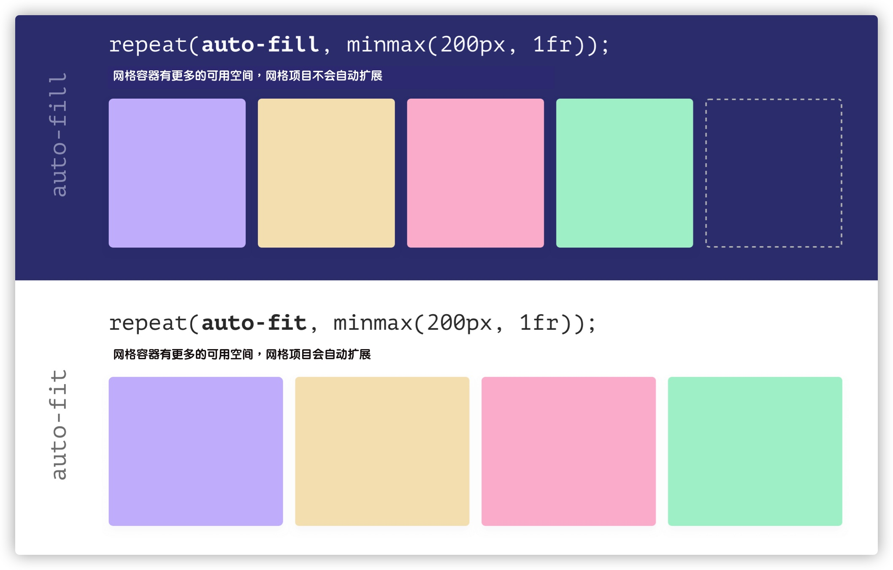</p>

<p><a rel="nofollow" href="https://codepen.io/thebabydino/full/gOayvpb" target="_blank">@Ana Tudor 在 Codepen上提供了一个具体的示例</a>：</p>

<div style="margin-bottom: 20px">
<iframe height="700" style="width: 100%;" scrolling="no" title="auto-fit vs. auto-fill #2 (change justify-content/ no of thumbnails per grid)" src="./Grid布局：5-网格中的可用函数_files/gOayvpb(1).html" frameborder="no" loading="lazy" allowtransparency="true" allowfullscreen="true">
  See the Pen <a rel="nofollow" href='https://codepen.io/thebabydino/pen/gOayvpb'>auto-fit vs. auto-fill #2 (change justify-content/ no of thumbnails per grid)</a> by Ana Tudor
  (<a rel="nofollow" href='https://codepen.io/thebabydino'>@thebabydino</a>) on <a rel="nofollow" href='https://codepen.io'>CodePen</a>.
</iframe>
</div>

<p>你可以尝试着拖动示例中的滑块来改变网格项目数量，就可以看到 <code>auto-fill</code> 和 <code>auto-fit</code> 的差异：</p>

<div style="margin-bottom: 20px">
<video controls="" width="100%" style="width: 100%; aspect-ratio: 16 / 9;" poster="/sites/default/files/blogs/2021/2105/css-grid-122.jpg">
    <source src="Grid布局：5-网格中的可用函数_files/css-grid-122.mp4" type="video/mp4">
</video>
</div>

<p>你要是将 <code>repeat()</code> 函数和<code>minmax(min,max)</code>，<code>1fr</code> 和 <code>auto-fill</code>（或<code>auto-fit</code>）结合起来，可以很容易帮我们实现像下图这样的响应式布局效果：</p>

<p></p>

<p>实现上图这样的效果，代码很简单：</p>

<pre class="css"><code class="css"><span class="class"><span class="class">.container</span></span> <span class="rules"><span class="rules">{
    <span class="rule"><span class="attribute"><span class="rule"><span class="attribute">display</span></span></span><span class="rule">:<span class="value"><span class="value"> grid;</span></span></span><span class="value"></span></span>
    <span class="rule"><span class="attribute"><span class="rule"><span class="attribute">grid-template-columns</span></span></span><span class="rule">:<span class="value"><span class="value"> <span class="function"><span class="function">repeat(auto-fill, minmax(<span class="number"><span class="number">250</span></span>px, <span class="number"><span class="number">1</span></span>fr)</span></span>);</span></span></span><span class="value"></span></span>
    <span class="rule"><span class="attribute"><span class="rule"><span class="attribute">gap</span></span></span><span class="rule">:<span class="value"><span class="value"> <span class="number"><span class="number">20</span></span>px;</span></span></span><span class="value"></span></span>
<span class="rule"><span class="rule">}</span></span></span><span class="rule"></span></span>
</code></pre>

<div style="margin-bottom: 20px">
<iframe height="600" style="width: 100%;" scrolling="no" title="Responsive Grid Layout with repeat()" src="./Grid布局：5-网格中的可用函数_files/wvJWMpv(1).html" frameborder="no" loading="lazy" allowtransparency="true" allowfullscreen="true">
  See the Pen <a rel="nofollow" href='https://codepen.io/airen/pen/wvJWMpv'>Responsive Grid Layout with repeat()</a> by Airen
  (<a rel="nofollow" href='https://codepen.io/airen'>@airen</a>) on <a rel="nofollow" href='https://codepen.io'>CodePen</a>.
</iframe>
</div>

<p>改变视窗大小，效果如下：</p>

<div style="margin-bottom: 20px">
<video controls="" width="100%" style="width: 100%; aspect-ratio: 16 / 9;" poster="/sites/default/files/blogs/2021/2105/css-grid-123.jpg">
    <source src="Grid布局：5-网格中的可用函数_files/css-grid-123.mp4" type="video/mp4">
</video>
</div>

<p>不过，上面示例还有一个小小的缺陷，当屏幕宽度小于 <code>250px</code> 时，浏览器水平方向会出现滚动条：</p>

<p>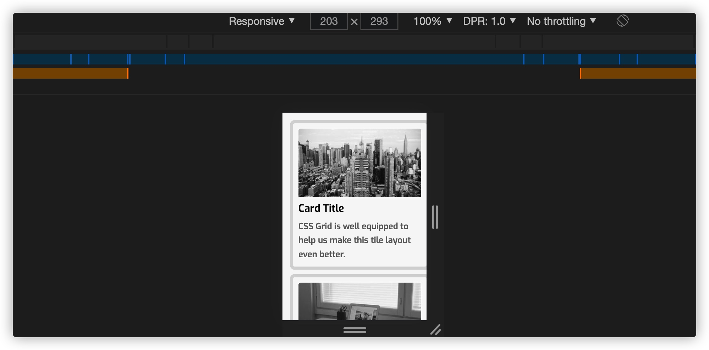</p>

<p>可以使用媒体查询来优秀上面的示例：</p>

<pre class="css"><code class="css"><span class="class"><span class="class">.container</span></span> <span class="rules"><span class="rules">{
    <span class="rule"><span class="attribute"><span class="rule"><span class="attribute">display</span></span></span><span class="rule">:<span class="value"><span class="value"> grid;</span></span></span><span class="value"></span></span>
    <span class="rule"><span class="attribute"><span class="rule"><span class="attribute">grid-template-columns</span></span></span><span class="rule">:<span class="value"><span class="value"> <span class="number"><span class="number">1</span></span>fr;</span></span></span><span class="value"></span></span>
    <span class="rule"><span class="attribute"><span class="rule"><span class="attribute">gap</span></span></span><span class="rule">:<span class="value"><span class="value"> <span class="number"><span class="number">20</span></span>px;</span></span></span><span class="value"></span></span>
<span class="rule"><span class="rule">}</span></span></span><span class="rule"></span></span>

<span class="at_rule"><span class="at_rule">@<span class="keyword"><span class="keyword">media</span></span> (min-width: <span class="number"><span class="number">300</span></span>px) </span></span>{
    <span class="class"><span class="class">.container</span></span> <span class="rules"><span class="rules">{
        <span class="rule"><span class="attribute"><span class="rule"><span class="attribute">grid-template-columns</span></span></span><span class="rule">:<span class="value"><span class="value"> <span class="function"><span class="function">repeat(auto-fill, minmax(<span class="number"><span class="number">250</span></span>px, <span class="number"><span class="number">1</span></span>fr)</span></span>);</span></span></span><span class="value"></span></span>
    <span class="rule"><span class="rule">}</span></span></span><span class="rule"></span></span>
}
</code></pre>

<p>如果不想使用媒体查询，可以换 CSS的比较函数来优化：</p>

<pre class="css"><code class="css"><span class="class"><span class="class">.container</span></span> <span class="rules"><span class="rules">{
    <span class="rule"><span class="attribute"><span class="rule"><span class="attribute">display</span></span></span><span class="rule">:<span class="value"><span class="value"> grid;</span></span></span><span class="value"></span></span>
    <span class="rule"><span class="attribute"><span class="rule"><span class="attribute">grid-template-columns</span></span></span><span class="rule">:<span class="value"><span class="value"> <span class="function"><span class="function">repeat(auto-fill, minmax(min(<span class="number"><span class="number">100</span></span>%, <span class="number"><span class="number">250</span></span>px)</span></span>, <span class="number"><span class="number">1</span></span>fr));</span></span></span><span class="value"></span></span>
    <span class="rule"><span class="attribute"><span class="rule"><span class="attribute">gap</span></span></span><span class="rule">:<span class="value"><span class="value"> <span class="number"><span class="number">20</span></span>px;</span></span></span><span class="value"></span></span>
<span class="rule"><span class="rule">}</span></span></span><span class="rule"></span></span>
</code></pre>

<div style="margin-bottom: 20px">
<iframe height="500" style="width: 100%;" scrolling="no" title="Responsive Grid Layout with repeat()" src="./Grid布局：5-网格中的可用函数_files/oNZLbmJ(1).html" frameborder="no" loading="lazy" allowtransparency="true" allowfullscreen="true">
  See the Pen <a rel="nofollow" href='https://codepen.io/airen/pen/oNZLbmJ'>Responsive Grid Layout with repeat()</a> by Airen
  (<a rel="nofollow" href='https://codepen.io/airen'>@airen</a>) on <a rel="nofollow" href='https://codepen.io'>CodePen</a>.
</iframe>
</div>

<blockquote>
  <p>有关于 <code>repeat()</code> 函数中 <code>auto-fill</code> 和 <code>auto-fit</code> 关键词更详细的介绍，可以阅读《<a href="https://www.w3cplus.com/css/auto-fill-and-auto-fit-in-css-grid.html" target="_blank">CSS Grid 中的 <code>auto-fill</code> 和 <code>auto-fit</code></a>》一文。</p>
</blockquote>

<h2 class="content-title" data-index="2">待续 ...</h2>

<p>到这里，有关于怎么设置网格轨道尺寸大小就先告一段落了。我们可以在 <code>grid-template-colums</code> 和 <code>grid-template-rows</code> （以及它们的简写属性<code>grid-template</code>）中使用不同的单位值，关键词和一些函数来设置网格轨道大小。这些方法用来设置网格轨道尺寸大小的时候，都会涉及一些简单的算法，不过有关于这些算法将会在后面的章节中单独拿出来介绍。</p>

<p>通过前面的学习，我们知道，<code>grid-template-columns</code> 和 <code>grid-template-rows</code> 是定义显式网格的方式，事实上，在 CSS 网格布局中，除了显式网格之外，还有隐式网格一说。那么接下来将和大家一起聊聊隐式网格相在的知识。</p>
</div></div></div>  </div>

  
   
    <div id="node_footer" class="clearfix">
              <div class="previous-next"><span class="prev">上一篇: </span><a href="https://www.w3cplus.com/css/grid-layout-part-4.html" target="_blank">图解CSS: Grid布局（Part4）</a> | <span class="next">下一篇: </span><a href="https://www.w3cplus.com/css/grid-layout-part-6.html" target="_blank">图解CSS: Grid布局（Part6）</a></div>            
    </div>

        

</div>  </div>
</div>
  </div>

        </div>

      </div>
    </div>

    
          <div id="sidebar-second" class="col-extra" style="position: sticky; top: 80px;">
        <!-- <script type="text/javascript">document.write(unescape('%3Cdiv id="bdcs"%3E%3C/div%3E%3Cscript charset="utf-8" src="//rp.baidu.com/rp3w/3w.js?sid=10994702955876242907') + '&t=' + (Math.ceil(new Date()/3600000)) + unescape('"%3E%3C/script%3E'));</script> -->
          <div class="region region-sidebar-second">
    <div id="block-custom-search-blocks-1" class="block block-custom-search-blocks">

    
  <div class="content">
    <form class="search-form" role="search" action="https://www.w3cplus.com/css/grid-layout-part-5.html?expire=1699848490&amp;code=0i-_V80maLg&amp;sign=bb8336ce2ffce6a5c7994526f8ccf5a7" method="post" id="custom-search-blocks-form-1" accept-charset="UTF-8" target="_self"><div><div class="form-item form-type-textfield form-item-custom-search-blocks-form-1">
  <label class="element-invisible" for="edit-custom-search-blocks-form-1--2">Search this site </label>
 <input title="请输入您想搜索的关键词。" class="custom-search-box form-text" placeholder="" type="text" id="edit-custom-search-blocks-form-1--2" name="custom_search_blocks_form_1" value="" size="15" maxlength="128">
</div>
<input type="hidden" name="delta" value="1">
<input type="hidden" name="form_build_id" value="form-JSifHSDcqz3YbG6oQYWMw1RubJw3jVZM9r9La9NeOQo">
<input type="hidden" name="form_id" value="custom_search_blocks_form_1">
<div class="form-actions form-wrapper" id="edit-actions"><input type="submit" id="edit-submit" name="op" value="搜索" class="form-submit"></div></div></form>  </div>
</div>
<div id="block-block-53" class="block block-block">

    <h2>直达目的地(^_^)</h2>
  
  <div class="content">
    <div class="node-blog-title"><div class="atalog"><ul class="mb-2"> <li><a data-index="0" href="javascript:;" class="active">minmax(min, max)</a></li><li><a data-index="1" href="javascript:;">min()、max() 和 clamp()</a></li><li><a data-index="2" href="javascript:;">repeat()</a></li><li><a data-index="3" href="javascript:;">待续 ...</a></li></ul></div></div>

<script>
$('.node-blog h2').addClass('content-title');
$('.node-blog h3').addClass('content-title');
$('.node-blog h4').addClass('content-title');
$('.node-blog h5').addClass('content-title');
//  给 h2 到 h5 增加一个 data-index 的自定义属性
$('.node-blog h2').attr('data-index', 2);
$('.node-blog h3').attr('data-index', 3);
$('.node-blog h4').attr('data-index', 4);
$('.node-blog h5').attr('data-index', 5);

//  函数的一个参数是标题级别，第二个参数是第一个标题的索引值
function atalog(titleIndex, start) {
    //  存储 HTML 和当前的索引值
    var el = {
        el: '',
        index: start
    };
    var current = 0;  //  已遍历的数量

    for (var i = start;i < $('.content-title').length;i ++) {
        if (i < current) {
            //  如果当前 i 的值小于已遍历的数量就跳过
            continue;
        }

        if ($('.content-title').eq(i).attr('data-index') > titleIndex) {
            //  如果是更小一级的标题就调用自身继续查找
            var result = atalog($('.content-title').eq(i).attr('data-index'), i);
            //  把返回的 HTML 添加到当前函数的 el 中
            el.el += '<li> ' + result.el + '</li>';
            current = result.index + 1;  //  设置已遍历的数量
            el.index = result.index;  //  设置索引
            continue;  //  跳过本次循环
        }

        if ($('.content-title').eq(i).attr('data-index') < titleIndex) {
            //  如果是更大一级的标题就返回已生成的 HTML 目录
            el.el = '<ul class="mb-2">' + el.el + '</ul>';
            return el;
        }
        //  生成 HTML 目录
        el.el += '<li><a data-index="' + i + '" href="javascript:;">' + $('.content-title').eq(i).text() + '</a></li>';
        el.index = i;  //  设置当前的索引值为 i
    }
    //  添加列表的外层 ul
    el.el = '<ul class="mb-2"> ' + el.el + '</ul>';
    return el;  //  返回生成的 HTML 目录
}

//  调用生成目录的函数，从第 0 个 h2 开始
var el = atalog(2, 0);
//  把生成的目录插入到文章的开头
$('.node-blog-title').prepend('<div class="atalog">' + el.el + '</div>');
$(".node-blog-title .atalog > ul > li >a ").eq(0).addClass('active');
//  给生成的目录添加点击事件
$('.node-blog-title .atalog a').on('click', function () {
    //  设置滚动条的高度为标题的 offsetTop
     var topPos = $('.content-title').eq($(this).attr('data-index')).offset().top;
var position = topPos - 80;
    $(document).scrollTop(position);
$('.node-blog-title .atalog a').removeClass('active')
    $(this).toggleClass('active')
});


</script>

  </div>
</div>
<div id="block-block-49" class="block block-block">

    
  <div class="content">
    <div style="margin-bottom: 5px;"><a rel="nofollow" href="https://s.juejin.cn/ds/iJrTure4/" target="_blank" title="现代 CSS"></a></div>

<div style="margin-bottom: 5px;"><a rel="nofollow" href="https://s.juejin.cn/ds/DEHQUMj/" target="_blank" title="防御式 CSS 精讲"></a></div>

<div style="margin-bottom: 5px;"><a rel="nofollow" href="https://s.juejin.cn/ds/iJrwMDDU/" target="_blank" title="现代 Web 布局"></a></div>


  </div>
</div>
  </div>
      </div>
    

  </div>
</div>

  <div id="footer-col" class="footer-col">
    <div class="container">
        <div class="region region-footer-col">
    <div id="block-block-39" class="block block-block">

    <h2>关于我们</h2>
  
  <div class="content">
    <a class="media-object" href="http://www.w3cplus.com/">W3cplus</a>
<div class="media-body">
	<p>W3cplus是一个致力于推广国内前端行业的技术博客。它以探索为己任，不断活跃在行业技术最前沿，努力提供高质量前端技术博文；其文章范围广泛，主要以CSS、HTML、JavaScript、A11Y、动画等教程为主。</p>
</div>
  </div>
</div>
<div id="block-block-40" class="block block-block">

    <h2>关于站长</h2>
  
  <div class="content">
    <p><a class="media-object" href="https://www.w3cplus.com/" target="_blank">大漠</a></p>
<div class="media-body">
	<p>常用昵称“大漠”，<a href="https://www.w3cplus.com/" target="_blank">W3CPlus</a>创始人，曾就职于淘宝。对HTML、CSS和A11Y等领域有一定的认识和丰富的实践经验。现在主要从事智能UI领域的探讨和学习！。CSS和Drupal中国布道者。2014年出版《<a href="https://www.w3cplus.com/book-comment.html">图解CSS3：核心技术与案例实战</a>》。</p>
	<div class="social">
		<a rel="nofollow" class="github" href="https://github.com/airen" target="_blank" title="github">github</a> <a rel="nofollow" class="twitter" href="https://twitter.com/w3cplus" target="_blank" title="twitter">twitter</a></div>
</div>
<p>&nbsp;</p>
  </div>
</div>
<div id="block-block-41" class="block block-block">

    <h2>我的作品</h2>
  
  <div class="content">
    <a class="media-object" href="https://www.w3cplus.com/book-comment.html" target="_blank">图解CSS3</a>
<div class="media-body">
	<p>本书是历时2载的心血之作，根据最新的CSS撰写，融入了作者在CSS领域多年的使用经验，旨在将本书打造成为CSS领域最权威和实用的专业著作，供没有经验的读者系统学习，供有经验的读者参考备查。新版在《<a href="https://www.w3cplus.com/blog/tags/674.html">图解SS</a>》中持续更新！</p></div>
  </div>
</div>
  </div>
    </div>
  </div> 

  <div id="footer" class="footer">
    <div class="container">
        <div class="region region-footer">
    <div id="block-block-54" class="block block-block">

    
  <div class="content">
        <p><a rel="nofollow" href="http://www.beian.miit.gov.cn/" target="_blank">湘B2-20110104-7</a>，衡阳市雅米信息技术有限公司 © 2011-2022 <a href="https://www.w3cplus.com/page/26.html" target="_blank">W3CPLUS</a>，感谢<a rel="nofollow" href="https://www.drupal.org/" target="_blank">Drupal</a>开源技术。感谢<a rel="nofollow" href="https://www.qiniu.com/" target="_blank">七牛云存储</a>提供静态资源空间。</p>
  </div>
</div>
  </div>
    </div>
  </div> 

<div id="totop" style="position: fixed; bottom: 50px; right: 15px; cursor: pointer; z-index: 999999; display: block; opacity: 1;">
  <!-- <div id="zhi12-shang-exp-2" class="shang-wrap" style="text-align: center;position:absolute;right: 0;bottom: 130%;z-index: 9999;">
    <div><a class="zhi12-popup zhi12-widget" rel="nofollow" href="//www.zhi12.com/paycenter/reward?entity=user&id=5491" target="_blank"></a></div>
</div> -->
    <a id="topLink" title="返回顶部">返回顶部</a>
</div>  <script type="text/javascript" src="./Grid布局：5-网格中的可用函数_files/js_VU7P4CTgUZdF2SyFko5LLAg9ZK0OSVjXVaAFnTLgVt0.js.下载"></script>
  
  <script type="text/javascript" src="./Grid布局：5-网格中的可用函数_files/respond.min.js.下载"></script>
<script type="text/javascript" src="./Grid布局：5-网格中的可用函数_files/js_ypadrG4kz9-JBpNOXmgjyVozLCJG_1RP3Ig-iqWR8n0.js.下载"></script>
<script type="text/javascript" src="./Grid布局：5-网格中的可用函数_files/js_YFY-zVcRx2bEEpwBdCXta7mOli3xeW_KMe7Y6Mv8zGk.js.下载"></script>
<script type="text/javascript" src="./Grid布局：5-网格中的可用函数_files/js_xP4aMPEI1iZ1ZrZMlSgsTllQqvH8oWbOQ7JVFWyrFCo.js.下载"></script>
<script type="text/javascript">
<!--//--><![CDATA[//><!--
jQuery.extend(Drupal.settings, {"basePath":"\/","pathPrefix":"","ajaxPageState":{"theme":"w3cplusV2","theme_token":"0ftKPcTfz3GvCizxUehPH6PutaIsP-yhi8dpIskFnh8","js":{"modules\/statistics\/statistics.js":1,"sites\/all\/modules\/contrib\/respondjs\/lib\/respond.min.js":1,"sites\/all\/modules\/contrib\/jquery_update\/replace\/jquery\/1.10\/jquery.min.js":1,"misc\/jquery-extend-3.4.0.js":1,"misc\/jquery-html-prefilter-3.5.0-backport.js":1,"misc\/jquery.once.js":1,"misc\/drupal.js":1,"public:\/\/languages\/zh-hans_71GwLEjcRL9b45LGd77xwMMW4YJ5etdnokx7XZMwKAc.js":1,"sites\/all\/modules\/contrib\/custom_search\/js\/custom_search.js":1,"sites\/all\/themes\/w3cplusV2\/js\/highlight.pack.js":1,"sites\/all\/themes\/w3cplusV2\/js\/main.js":1},"css":{"modules\/system\/system.base.css":1,"modules\/system\/system.menus.css":1,"modules\/system\/system.messages.css":1,"modules\/system\/system.theme.css":1,"modules\/field\/theme\/field.css":1,"modules\/node\/node.css":1,"modules\/search\/search.css":1,"modules\/user\/user.css":1,"sites\/all\/modules\/contrib\/views\/css\/views.css":1,"sites\/all\/modules\/contrib\/ckeditor\/ckeditor.css":1,"sites\/all\/modules\/contrib\/ctools\/css\/ctools.css":1,"sites\/all\/modules\/contrib\/paywall\/includes\/paywall_php_sdk\/paywall.css":1,"sites\/all\/modules\/contrib\/custom_search\/custom_search.css":1,"sites\/all\/themes\/w3cplusV2\/css\/style.css":1}},"custom_search":{"form_target":"_self","solr":0},"statistics":{"data":{"nid":"2715"},"url":"\/modules\/statistics\/statistics.php"},"urlIsAjaxTrusted":{"\/css\/grid-layout-part-5.html?expire=1699848490\u0026code=0i-_V80maLg\u0026sign=bb8336ce2ffce6a5c7994526f8ccf5a7":true}});
//--><!]]>
</script>
<script src="./Grid布局：5-网格中的可用函数_files/jquery.colorbox-min.js.下载"></script>


<script>
var _hmt = _hmt || [];
(function() {
  var hm = document.createElement("script");
  hm.src = "https://hm.baidu.com/hm.js?177319b798978621f83845b12c86fa29";
  var s = document.getElementsByTagName("script")[0]; 
  s.parentNode.insertBefore(hm, s);
})();
</script>  
<span class="c6bae"></span>
<div id="cboxOverlay" style="display: none;"></div><div id="colorbox" class="" role="dialog" tabindex="-1" style="display: none;"><div id="cboxWrapper"><div><div id="cboxTopLeft" style="float: left;"></div><div id="cboxTopCenter" style="float: left;"></div><div id="cboxTopRight" style="float: left;"></div></div><div style="clear: left;"><div id="cboxMiddleLeft" style="float: left;"></div><div id="cboxContent" style="float: left;"><div id="cboxTitle" style="float: left;"></div><div id="cboxCurrent" style="float: left;"></div><button type="button" id="cboxPrevious"></button><button type="button" id="cboxNext"></button><button type="button" id="cboxSlideshow"></button><div id="cboxLoadingOverlay" style="float: left;"></div><div id="cboxLoadingGraphic" style="float: left;"></div></div><div id="cboxMiddleRight" style="float: left;"></div></div><div style="clear: left;"><div id="cboxBottomLeft" style="float: left;"></div><div id="cboxBottomCenter" style="float: left;"></div><div id="cboxBottomRight" style="float: left;"></div></div></div><div style="position: absolute; width: 9999px; visibility: hidden; display: none; max-width: none;"></div></div></body></html>